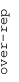
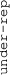

These results are also available as PDF and EPS documents.
Depending on your display resolution, scrolling or zooming may be necessary.
|  |
| 3 |
| 0 |
| -3 |
|  |
| GO_NEGATIVE_REGULATION_OF_VASCULATURE_DEVELOPMENT GO_NEGATIVE_REGULATION_OF_VASCULATURE_DEVELOPMENT | |||||||||||
| GO_EXCITATORY_SYNAPSE GO_EXCITATORY_SYNAPSE | |||||||||||
| GO_DOPAMINE_METABOLIC_PROCESS GO_DOPAMINE_METABOLIC_PROCESS | |||||||||||
| GO_CATECHOLAMINE_METABOLIC_PROCESS GO_CATECHOLAMINE_METABOLIC_PROCESS | |||||||||||
| GO_NEGATIVE_REGULATION_OF_BLOOD_PRESSURE GO_NEGATIVE_REGULATION_OF_BLOOD_PRESSURE | |||||||||||
| GO_HYDROLASE_ACTIVITY_ACTING_ON_ACID_PHOSPHORUS_NITROGEN_BONDS GO_HYDROLASE_ACTIVITY_ACTING_ON_ACID_PHOSPHORUS_NITROGEN_BONDS | |||||||||||
| GO_ACID_SECRETION GO_ACID_SECRETION | |||||||||||
| GO_REGULATION_OF_SIGNALING_RECEPTOR_ACTIVITY GO_REGULATION_OF_SIGNALING_RECEPTOR_ACTIVITY | |||||||||||
| GO_LYMPHOCYTE_CHEMOTAXIS GO_LYMPHOCYTE_CHEMOTAXIS | |||||||||||
| GO_EXTRACELLULAR_MATRIX_STRUCTURAL_CONSTITUENT GO_EXTRACELLULAR_MATRIX_STRUCTURAL_CONSTITUENT | |||||||||||
| GO_ANCHORED_COMPONENT_OF_MEMBRANE GO_ANCHORED_COMPONENT_OF_MEMBRANE | |||||||||||
| GO_DETECTION_OF_ABIOTIC_STIMULUS GO_DETECTION_OF_ABIOTIC_STIMULUS | |||||||||||
| GO_COLLAGEN_TRIMER GO_COLLAGEN_TRIMER | |||||||||||
| GO_EXTRACELLULAR_MATRIX_STRUCTURAL_CONSTITUENT_CONFERRING_TENSILE_STRENGTH GO_EXTRACELLULAR_MATRIX_STRUCTURAL_CONSTITUENT_CONFERRING_TENSILE_STRENGTH | |||||||||||
| GO_MOTILE_CILIUM GO_MOTILE_CILIUM | |||||||||||
| GO_REGULATION_OF_SYSTEMIC_ARTERIAL_BLOOD_PRESSURE GO_REGULATION_OF_SYSTEMIC_ARTERIAL_BLOOD_PRESSURE | |||||||||||
| GO_HEPARIN_BINDING GO_HEPARIN_BINDING | |||||||||||
| GO_HOMOPHILIC_CELL_ADHESION_VIA_PLASMA_MEMBRANE_ADHESION_MOLECULES GO_HOMOPHILIC_CELL_ADHESION_VIA_PLASMA_MEMBRANE_ADHESION_MOLECULES | |||||||||||
| GO_LIGAND_GATED_CATION_CHANNEL_ACTIVITY GO_LIGAND_GATED_CATION_CHANNEL_ACTIVITY | |||||||||||
| GO_LIGAND_GATED_ION_CHANNEL_ACTIVITY GO_LIGAND_GATED_ION_CHANNEL_ACTIVITY | |||||||||||
| GO_SYNAPTIC_TRANSMISSION_GLUTAMATERGIC GO_SYNAPTIC_TRANSMISSION_GLUTAMATERGIC | |||||||||||
| GO_VOLTAGE_GATED_CATION_CHANNEL_ACTIVITY GO_VOLTAGE_GATED_CATION_CHANNEL_ACTIVITY | |||||||||||
| GO_ODONTOGENESIS GO_ODONTOGENESIS | |||||||||||
| GO_PLASMA_MEMBRANE_SIGNALING_RECEPTOR_COMPLEX GO_PLASMA_MEMBRANE_SIGNALING_RECEPTOR_COMPLEX | |||||||||||
| GO_NEGATIVE_REGULATION_OF_RESPONSE_TO_WOUNDING GO_NEGATIVE_REGULATION_OF_RESPONSE_TO_WOUNDING | |||||||||||
| GO_NEGATIVE_CHEMOTAXIS GO_NEGATIVE_CHEMOTAXIS | |||||||||||
| GO_COLLAGEN_BINDING GO_COLLAGEN_BINDING | |||||||||||
| GO_NEPHRON_DEVELOPMENT GO_NEPHRON_DEVELOPMENT | |||||||||||
| GO_NEPHRON_EPITHELIUM_DEVELOPMENT GO_NEPHRON_EPITHELIUM_DEVELOPMENT | |||||||||||
| GO_KIDNEY_EPITHELIUM_DEVELOPMENT GO_KIDNEY_EPITHELIUM_DEVELOPMENT | |||||||||||
| GO_KIDNEY_MORPHOGENESIS GO_KIDNEY_MORPHOGENESIS | |||||||||||
| GO_GLOMERULUS_DEVELOPMENT GO_GLOMERULUS_DEVELOPMENT | |||||||||||
| GO_CELL_DIFFERENTIATION_INVOLVED_IN_KIDNEY_DEVELOPMENT GO_CELL_DIFFERENTIATION_INVOLVED_IN_KIDNEY_DEVELOPMENT | |||||||||||
| GO_EPITHELIAL_CELL_DIFFERENTIATION_INVOLVED_IN_KIDNEY_DEVELOPMENT GO_EPITHELIAL_CELL_DIFFERENTIATION_INVOLVED_IN_KIDNEY_DEVELOPMENT | |||||||||||
| GO_SPECIFIC_GRANULE GO_SPECIFIC_GRANULE | |||||||||||
| GO_TERTIARY_GRANULE GO_TERTIARY_GRANULE | |||||||||||
| GO_POSITIVE_REGULATION_OF_I_KAPPAB_KINASE_NF_KAPPAB_SIGNALING GO_POSITIVE_REGULATION_OF_I_KAPPAB_KINASE_NF_KAPPAB_SIGNALING | |||||||||||
| GO_TUMOR_NECROSIS_FACTOR_SUPERFAMILY_CYTOKINE_PRODUCTION GO_TUMOR_NECROSIS_FACTOR_SUPERFAMILY_CYTOKINE_PRODUCTION | |||||||||||
| GO_POSITIVE_REGULATION_OF_PHAGOCYTOSIS GO_POSITIVE_REGULATION_OF_PHAGOCYTOSIS | |||||||||||
| GO_RAS_GUANYL_NUCLEOTIDE_EXCHANGE_FACTOR_ACTIVITY GO_RAS_GUANYL_NUCLEOTIDE_EXCHANGE_FACTOR_ACTIVITY | |||||||||||
| GO_REGULATION_OF_RHO_PROTEIN_SIGNAL_TRANSDUCTION GO_REGULATION_OF_RHO_PROTEIN_SIGNAL_TRANSDUCTION | |||||||||||
| GO_SEMAPHORIN_PLEXIN_SIGNALING_PATHWAY GO_SEMAPHORIN_PLEXIN_SIGNALING_PATHWAY | |||||||||||
| GO_GRANULOCYTE_MIGRATION GO_GRANULOCYTE_MIGRATION | |||||||||||
| GO_NEUTROPHIL_MIGRATION GO_NEUTROPHIL_MIGRATION | |||||||||||
| GO_SYNAPSE_ASSEMBLY GO_SYNAPSE_ASSEMBLY | |||||||||||
| GO_POSITIVE_REGULATION_OF_INFLAMMATORY_RESPONSE GO_POSITIVE_REGULATION_OF_INFLAMMATORY_RESPONSE | |||||||||||
| GO_POSITIVE_REGULATION_OF_CELL_KILLING GO_POSITIVE_REGULATION_OF_CELL_KILLING | |||||||||||
| GO_SMOOTH_MUSCLE_CONTRACTION GO_SMOOTH_MUSCLE_CONTRACTION | |||||||||||
| GO_TERTIARY_GRANULE_LUMEN GO_TERTIARY_GRANULE_LUMEN | |||||||||||
| GO_PRESYNAPTIC_ACTIVE_ZONE GO_PRESYNAPTIC_ACTIVE_ZONE | |||||||||||
| GO_INTERLEUKIN_10_PRODUCTION GO_INTERLEUKIN_10_PRODUCTION | |||||||||||
| GO_VACUOLAR_LUMEN GO_VACUOLAR_LUMEN | |||||||||||
| GO_LYSOSOMAL_LUMEN GO_LYSOSOMAL_LUMEN | |||||||||||
| GO_REGULATION_OF_CELLULAR_EXTRAVASATION GO_REGULATION_OF_CELLULAR_EXTRAVASATION | |||||||||||
| GO_REGULATION_OF_LEUKOCYTE_MEDIATED_IMMUNITY GO_REGULATION_OF_LEUKOCYTE_MEDIATED_IMMUNITY | |||||||||||
| GO_COLLAGEN_METABOLIC_PROCESS GO_COLLAGEN_METABOLIC_PROCESS | |||||||||||
| GO_REGULATION_OF_MEMBRANE_INVAGINATION GO_REGULATION_OF_MEMBRANE_INVAGINATION | |||||||||||
| GO_POSITIVE_REGULATION_OF_SYNAPTIC_TRANSMISSION GO_POSITIVE_REGULATION_OF_SYNAPTIC_TRANSMISSION | |||||||||||
| GO_BASEMENT_MEMBRANE GO_BASEMENT_MEMBRANE | |||||||||||
| GO_CARGO_RECEPTOR_ACTIVITY GO_CARGO_RECEPTOR_ACTIVITY | |||||||||||
| GO_SCAVENGER_RECEPTOR_ACTIVITY GO_SCAVENGER_RECEPTOR_ACTIVITY | |||||||||||
| GO_NEGATIVE_REGULATION_OF_INTERLEUKIN_10_PRODUCTION GO_NEGATIVE_REGULATION_OF_INTERLEUKIN_10_PRODUCTION | |||||||||||
| GO_IMMUNOGLOBULIN_BINDING GO_IMMUNOGLOBULIN_BINDING | |||||||||||
| GO_CELLULAR_EXTRAVASATION GO_CELLULAR_EXTRAVASATION | |||||||||||
| GO_HEAT_GENERATION GO_HEAT_GENERATION | |||||||||||
| GO_REGULATION_OF_LEUKOCYTE_MIGRATION GO_REGULATION_OF_LEUKOCYTE_MIGRATION | |||||||||||
| GO_AMYLOID_BETA_BINDING GO_AMYLOID_BETA_BINDING | |||||||||||
| GO_CALCIUM_DEPENDENT_CELL_CELL_ADHESION_VIA_PLASMA_MEMBRANE_CELL_ADHESION_MOLECULES GO_CALCIUM_DEPENDENT_CELL_CELL_ADHESION_VIA_PLASMA_MEMBRANE_CELL_ADHESION_MOLECULES | |||||||||||
| GO_CELL_CELL_JUNCTION_ORGANIZATION GO_CELL_CELL_JUNCTION_ORGANIZATION | |||||||||||
| GO_CELL_CELL_JUNCTION_ASSEMBLY GO_CELL_CELL_JUNCTION_ASSEMBLY | |||||||||||
| GO_POSITIVE_REGULATION_OF_NERVOUS_SYSTEM_PROCESS GO_POSITIVE_REGULATION_OF_NERVOUS_SYSTEM_PROCESS | |||||||||||
| GO_SEMAPHORIN_RECEPTOR_BINDING GO_SEMAPHORIN_RECEPTOR_BINDING | |||||||||||
| GO_POSITIVE_REGULATION_OF_SYNAPTIC_TRANSMISSION_GLUTAMATERGIC GO_POSITIVE_REGULATION_OF_SYNAPTIC_TRANSMISSION_GLUTAMATERGIC | |||||||||||
| GO_RAGE_RECEPTOR_BINDING GO_RAGE_RECEPTOR_BINDING | |||||||||||
| GO_PROGRAMMED_CELL_DEATH_INVOLVED_IN_CELL_DEVELOPMENT GO_PROGRAMMED_CELL_DEATH_INVOLVED_IN_CELL_DEVELOPMENT | |||||||||||
| GO_CELLULAR_DEFENSE_RESPONSE GO_CELLULAR_DEFENSE_RESPONSE | |||||||||||
| GO_REGULATION_OF_CELL_KILLING GO_REGULATION_OF_CELL_KILLING | |||||||||||
| GO_CYTOKINE_BINDING GO_CYTOKINE_BINDING | |||||||||||
| GO_INTERLEUKIN_1_PRODUCTION GO_INTERLEUKIN_1_PRODUCTION | |||||||||||
| GO_INTERLEUKIN_1_BETA_PRODUCTION GO_INTERLEUKIN_1_BETA_PRODUCTION | |||||||||||
| GO_INTERLEUKIN_1_SECRETION GO_INTERLEUKIN_1_SECRETION | |||||||||||
| GO_CIRCADIAN_SLEEP_WAKE_CYCLE_SLEEP GO_CIRCADIAN_SLEEP_WAKE_CYCLE_SLEEP | |||||||||||
| GO_CIRCADIAN_SLEEP_WAKE_CYCLE GO_CIRCADIAN_SLEEP_WAKE_CYCLE | |||||||||||
| GO_MEMORY GO_MEMORY | |||||||||||
| GO_GRANULOCYTE_MACROPHAGE_COLONY_STIMULATING_FACTOR_PRODUCTION GO_GRANULOCYTE_MACROPHAGE_COLONY_STIMULATING_FACTOR_PRODUCTION | |||||||||||
| GO_POSITIVE_REGULATION_OF_GRANULOCYTE_MACROPHAGE_COLONY_STIMULATING_FACTOR_PRODUCTION GO_POSITIVE_REGULATION_OF_GRANULOCYTE_MACROPHAGE_COLONY_STIMULATING_FACTOR_PRODUCTION | |||||||||||
| GO_CHEMOKINE_PRODUCTION GO_CHEMOKINE_PRODUCTION | |||||||||||
| GO_SPECIFIC_GRANULE_LUMEN GO_SPECIFIC_GRANULE_LUMEN | |||||||||||
| GO_NEGATIVE_REGULATION_OF_LYMPHOCYTE_MIGRATION GO_NEGATIVE_REGULATION_OF_LYMPHOCYTE_MIGRATION | |||||||||||
| GO_METALLOENDOPEPTIDASE_ACTIVITY GO_METALLOENDOPEPTIDASE_ACTIVITY | |||||||||||
| GO_METALLOPEPTIDASE_ACTIVITY GO_METALLOPEPTIDASE_ACTIVITY | |||||||||||
| GO_CELL_JUNCTION_MAINTENANCE GO_CELL_JUNCTION_MAINTENANCE | |||||||||||
| GO_S100_PROTEIN_BINDING GO_S100_PROTEIN_BINDING | |||||||||||
| GO_PLATELET_DEGRANULATION GO_PLATELET_DEGRANULATION | |||||||||||
| GO_T_CELL_ACTIVATION_INVOLVED_IN_IMMUNE_RESPONSE GO_T_CELL_ACTIVATION_INVOLVED_IN_IMMUNE_RESPONSE | |||||||||||
| GO_VOLTAGE_GATED_CALCIUM_CHANNEL_ACTIVITY GO_VOLTAGE_GATED_CALCIUM_CHANNEL_ACTIVITY | |||||||||||
| GO_COMPLEMENT_ACTIVATION GO_COMPLEMENT_ACTIVATION | |||||||||||
| GO_MONOOXYGENASE_ACTIVITY GO_MONOOXYGENASE_ACTIVITY | |||||||||||
| GO_INTERFERON_GAMMA_MEDIATED_SIGNALING_PATHWAY GO_INTERFERON_GAMMA_MEDIATED_SIGNALING_PATHWAY | |||||||||||
| GO_COLLAGEN_CATABOLIC_PROCESS GO_COLLAGEN_CATABOLIC_PROCESS | |||||||||||
| GO_POSITIVE_REGULATION_OF_B_CELL_PROLIFERATION GO_POSITIVE_REGULATION_OF_B_CELL_PROLIFERATION | |||||||||||
| GO_CYTOKINE_RECEPTOR_ACTIVITY GO_CYTOKINE_RECEPTOR_ACTIVITY | |||||||||||
| GO_IMMUNE_RECEPTOR_ACTIVITY GO_IMMUNE_RECEPTOR_ACTIVITY | |||||||||||
| GO_POSITIVE_REGULATION_OF_LEUKOCYTE_PROLIFERATION GO_POSITIVE_REGULATION_OF_LEUKOCYTE_PROLIFERATION | |||||||||||
| GO_REGULATION_OF_ADAPTIVE_IMMUNE_RESPONSE GO_REGULATION_OF_ADAPTIVE_IMMUNE_RESPONSE | |||||||||||
| GO_INTERFERON_GAMMA_PRODUCTION GO_INTERFERON_GAMMA_PRODUCTION | |||||||||||
| GO_NEGATIVE_REGULATION_OF_IMMUNE_RESPONSE GO_NEGATIVE_REGULATION_OF_IMMUNE_RESPONSE | |||||||||||
| GO_NEGATIVE_REGULATION_OF_CELL_ACTIVATION GO_NEGATIVE_REGULATION_OF_CELL_ACTIVATION | |||||||||||
| GO_EXOGENOUS_PROTEIN_BINDING GO_EXOGENOUS_PROTEIN_BINDING | |||||||||||
| GO_CORECEPTOR_ACTIVITY GO_CORECEPTOR_ACTIVITY | |||||||||||
| GO_REGULATION_OF_LIPASE_ACTIVITY GO_REGULATION_OF_LIPASE_ACTIVITY | |||||||||||
| GO_POSITIVE_REGULATION_OF_LIPASE_ACTIVITY GO_POSITIVE_REGULATION_OF_LIPASE_ACTIVITY | |||||||||||
| GO_NEUROTRANSMITTER_METABOLIC_PROCESS GO_NEUROTRANSMITTER_METABOLIC_PROCESS | |||||||||||
| GO_NEUROTRANSMITTER_BIOSYNTHETIC_PROCESS GO_NEUROTRANSMITTER_BIOSYNTHETIC_PROCESS | |||||||||||
| GO_POSITIVE_REGULATION_OF_LEUKOCYTE_DIFFERENTIATION GO_POSITIVE_REGULATION_OF_LEUKOCYTE_DIFFERENTIATION | |||||||||||
| GO_POSITIVE_REGULATION_OF_HEMOPOIESIS GO_POSITIVE_REGULATION_OF_HEMOPOIESIS | |||||||||||
| GO_POSITIVE_REGULATION_OF_LYMPHOCYTE_DIFFERENTIATION GO_POSITIVE_REGULATION_OF_LYMPHOCYTE_DIFFERENTIATION | |||||||||||
| GO_CARBOHYDRATE_DERIVATIVE_CATABOLIC_PROCESS GO_CARBOHYDRATE_DERIVATIVE_CATABOLIC_PROCESS | |||||||||||
| GO_DETECTION_OF_MOLECULE_OF_BACTERIAL_ORIGIN GO_DETECTION_OF_MOLECULE_OF_BACTERIAL_ORIGIN | |||||||||||
| GO_NEGATIVE_REGULATION_OF_MACROPHAGE_ACTIVATION GO_NEGATIVE_REGULATION_OF_MACROPHAGE_ACTIVATION | |||||||||||
| GO_REGULATION_OF_T_CELL_DIFFERENTIATION GO_REGULATION_OF_T_CELL_DIFFERENTIATION | |||||||||||
| GO_REGULATION_OF_LYMPHOCYTE_DIFFERENTIATION GO_REGULATION_OF_LYMPHOCYTE_DIFFERENTIATION | |||||||||||
| GO_REGULATION_OF_T_HELPER_CELL_DIFFERENTIATION GO_REGULATION_OF_T_HELPER_CELL_DIFFERENTIATION | |||||||||||
| GO_T_CELL_DIFFERENTIATION_INVOLVED_IN_IMMUNE_RESPONSE GO_T_CELL_DIFFERENTIATION_INVOLVED_IN_IMMUNE_RESPONSE | |||||||||||
| GO_CD4_POSITIVE_ALPHA_BETA_T_CELL_ACTIVATION GO_CD4_POSITIVE_ALPHA_BETA_T_CELL_ACTIVATION | |||||||||||
| GO_CD4_POSITIVE_ALPHA_BETA_T_CELL_DIFFERENTIATION GO_CD4_POSITIVE_ALPHA_BETA_T_CELL_DIFFERENTIATION | |||||||||||
| GO_NEGATIVE_REGULATION_OF_INTERLEUKIN_8_PRODUCTION GO_NEGATIVE_REGULATION_OF_INTERLEUKIN_8_PRODUCTION | |||||||||||
| GO_ENTRY_INTO_HOST GO_ENTRY_INTO_HOST | |||||||||||
| GO_ALPHA_BETA_T_CELL_ACTIVATION GO_ALPHA_BETA_T_CELL_ACTIVATION | |||||||||||
| GO_REGULATION_OF_ALPHA_BETA_T_CELL_ACTIVATION GO_REGULATION_OF_ALPHA_BETA_T_CELL_ACTIVATION | |||||||||||
| GO_T_HELPER_1_TYPE_IMMUNE_RESPONSE GO_T_HELPER_1_TYPE_IMMUNE_RESPONSE | |||||||||||
| GO_MULTI_ORGANISM_MEMBRANE_FUSION GO_MULTI_ORGANISM_MEMBRANE_FUSION | |||||||||||
| GO_HEXOSAMINIDASE_ACTIVITY GO_HEXOSAMINIDASE_ACTIVITY | |||||||||||
| GO_DNA_METHYLATION_INVOLVED_IN_GAMETE_GENERATION GO_DNA_METHYLATION_INVOLVED_IN_GAMETE_GENERATION | |||||||||||
| GO_RESPONSE_TO_INTERFERON_GAMMA GO_RESPONSE_TO_INTERFERON_GAMMA | |||||||||||
| GO_INTERLEUKIN_6_PRODUCTION GO_INTERLEUKIN_6_PRODUCTION | |||||||||||
| GO_INTERLEUKIN_8_PRODUCTION GO_INTERLEUKIN_8_PRODUCTION | |||||||||||
| GO_INTERLEUKIN_8_SECRETION GO_INTERLEUKIN_8_SECRETION | |||||||||||
| GO_POSITIVE_REGULATION_OF_INTERLEUKIN_10_PRODUCTION GO_POSITIVE_REGULATION_OF_INTERLEUKIN_10_PRODUCTION | |||||||||||
| GO_HYDROLASE_ACTIVITY_HYDROLYZING_O_GLYCOSYL_COMPOUNDS GO_HYDROLASE_ACTIVITY_HYDROLYZING_O_GLYCOSYL_COMPOUNDS | |||||||||||
| GO_HYDROLASE_ACTIVITY_ACTING_ON_GLYCOSYL_BONDS GO_HYDROLASE_ACTIVITY_ACTING_ON_GLYCOSYL_BONDS | |||||||||||
| GO_T_CELL_PROLIFERATION GO_T_CELL_PROLIFERATION | |||||||||||
| GO_NEGATIVE_REGULATION_OF_LYMPHOCYTE_DIFFERENTIATION GO_NEGATIVE_REGULATION_OF_LYMPHOCYTE_DIFFERENTIATION | |||||||||||
| GO_NEGATIVE_REGULATION_OF_T_CELL_DIFFERENTIATION GO_NEGATIVE_REGULATION_OF_T_CELL_DIFFERENTIATION | |||||||||||
| GO_POSITIVE_REGULATION_OF_LIPID_CATABOLIC_PROCESS GO_POSITIVE_REGULATION_OF_LIPID_CATABOLIC_PROCESS | |||||||||||
| GO_ACTIVATION_OF_PHOSPHOLIPASE_C_ACTIVITY GO_ACTIVATION_OF_PHOSPHOLIPASE_C_ACTIVITY | |||||||||||
| GO_CALCIUM_DEPENDENT_CYSTEINE_TYPE_ENDOPEPTIDASE_ACTIVITY GO_CALCIUM_DEPENDENT_CYSTEINE_TYPE_ENDOPEPTIDASE_ACTIVITY | |||||||||||
| GO_NEGATIVE_REGULATION_OF_PEPTIDYL_THREONINE_PHOSPHORYLATION GO_NEGATIVE_REGULATION_OF_PEPTIDYL_THREONINE_PHOSPHORYLATION | |||||||||||
| GO_LAMELLIPODIUM GO_LAMELLIPODIUM | |||||||||||
| GO_RECYCLING_ENDOSOME GO_RECYCLING_ENDOSOME | |||||||||||
| GO_CHAPERONE_MEDIATED_PROTEIN_FOLDING GO_CHAPERONE_MEDIATED_PROTEIN_FOLDING | |||||||||||
| GO_ENDOCRINE_PROCESS GO_ENDOCRINE_PROCESS | |||||||||||
| GO_REGULATION_OF_NEUTROPHIL_MIGRATION GO_REGULATION_OF_NEUTROPHIL_MIGRATION | |||||||||||
| GO_POSITIVE_REGULATION_OF_NEUTROPHIL_MIGRATION GO_POSITIVE_REGULATION_OF_NEUTROPHIL_MIGRATION | |||||||||||
| GO_INTRINSIC_COMPONENT_OF_ENDOPLASMIC_RETICULUM_MEMBRANE GO_INTRINSIC_COMPONENT_OF_ENDOPLASMIC_RETICULUM_MEMBRANE | |||||||||||
| GO_PHOSPHATIDYLINOSITOL_PHOSPHORYLATION GO_PHOSPHATIDYLINOSITOL_PHOSPHORYLATION | |||||||||||
| GO_VACUOLE_ORGANIZATION GO_VACUOLE_ORGANIZATION | |||||||||||
| GO_GOLGI_ASSOCIATED_VESICLE GO_GOLGI_ASSOCIATED_VESICLE | |||||||||||
| GO_ENDOPLASMIC_RETICULUM_TO_CYTOSOL_TRANSPORT GO_ENDOPLASMIC_RETICULUM_TO_CYTOSOL_TRANSPORT | |||||||||||
| GO_ENDOSOME_TRANSPORT_VIA_MULTIVESICULAR_BODY_SORTING_PATHWAY GO_ENDOSOME_TRANSPORT_VIA_MULTIVESICULAR_BODY_SORTING_PATHWAY | |||||||||||
| GO_ELECTRON_TRANSFER_ACTIVITY GO_ELECTRON_TRANSFER_ACTIVITY | |||||||||||
| GO_COPI_COATED_VESICLE GO_COPI_COATED_VESICLE | |||||||||||
| GO_AZUROPHIL_GRANULE GO_AZUROPHIL_GRANULE | |||||||||||
| GO_AZUROPHIL_GRANULE_MEMBRANE GO_AZUROPHIL_GRANULE_MEMBRANE | |||||||||||
| GO_AZUROPHIL_GRANULE_LUMEN GO_AZUROPHIL_GRANULE_LUMEN | |||||||||||
| GO_LATE_ENDOSOME_MEMBRANE GO_LATE_ENDOSOME_MEMBRANE | |||||||||||
| GO_RESPIRATORY_BURST GO_RESPIRATORY_BURST | |||||||||||
| GO_PHAGOCYTIC_VESICLE_MEMBRANE GO_PHAGOCYTIC_VESICLE_MEMBRANE | |||||||||||
| GO_PHOSPHATIDYLINOSITOL_3_KINASE_COMPLEX GO_PHOSPHATIDYLINOSITOL_3_KINASE_COMPLEX | |||||||||||
| GO_MANNOSIDASE_ACTIVITY GO_MANNOSIDASE_ACTIVITY | |||||||||||
| GO_PHAGOCYTIC_VESICLE GO_PHAGOCYTIC_VESICLE | |||||||||||
| GO_AUTOPHAGOSOME GO_AUTOPHAGOSOME | |||||||||||
| GO_PIGMENT_GRANULE GO_PIGMENT_GRANULE | |||||||||||
| GO_ENDOCYTIC_VESICLE_MEMBRANE GO_ENDOCYTIC_VESICLE_MEMBRANE | |||||||||||
| GO_PHOSPHATIDYLINOSITOL_KINASE_ACTIVITY GO_PHOSPHATIDYLINOSITOL_KINASE_ACTIVITY | |||||||||||
| GO_PROTEIN_DEGLYCOSYLATION GO_PROTEIN_DEGLYCOSYLATION | |||||||||||
| GO_ERAD_PATHWAY GO_ERAD_PATHWAY | |||||||||||
| GO_UBIQUITIN_DEPENDENT_ERAD_PATHWAY GO_UBIQUITIN_DEPENDENT_ERAD_PATHWAY | |||||||||||
| GO_OXIDOREDUCTASE_ACTIVITY_ACTING_ON_A_SULFUR_GROUP_OF_DONORS GO_OXIDOREDUCTASE_ACTIVITY_ACTING_ON_A_SULFUR_GROUP_OF_DONORS | |||||||||||
| GO_MEMBRANE_DOCKING GO_MEMBRANE_DOCKING | |||||||||||
| GO_CYTOSOLIC_TRANSPORT GO_CYTOSOLIC_TRANSPORT | |||||||||||
| GO_ANTIGEN_PROCESSING_AND_PRESENTATION_OF_PEPTIDE_ANTIGEN GO_ANTIGEN_PROCESSING_AND_PRESENTATION_OF_PEPTIDE_ANTIGEN | |||||||||||
| GO_UBIQUITIN_BINDING GO_UBIQUITIN_BINDING | |||||||||||
| GO_POSITIVE_REGULATION_OF_PROTEIN_MODIFICATION_BY_SMALL_PROTEIN_CONJUGATION_OR_REMOVAL GO_POSITIVE_REGULATION_OF_PROTEIN_MODIFICATION_BY_SMALL_PROTEIN_CONJUGATION_OR_REMOVAL | |||||||||||
| GO_MITOCHONDRIAL_MEMBRANE_ORGANIZATION GO_MITOCHONDRIAL_MEMBRANE_ORGANIZATION | |||||||||||
| GO_TYPE_I_INTERFERON_PRODUCTION GO_TYPE_I_INTERFERON_PRODUCTION | |||||||||||
| GO_REGULATION_OF_CENTROSOME_DUPLICATION GO_REGULATION_OF_CENTROSOME_DUPLICATION | |||||||||||
| GO_POSITIVE_REGULATION_OF_ATPASE_ACTIVITY GO_POSITIVE_REGULATION_OF_ATPASE_ACTIVITY | |||||||||||
| GO_NEGATIVE_REGULATION_OF_SYSTEMIC_ARTERIAL_BLOOD_PRESSURE GO_NEGATIVE_REGULATION_OF_SYSTEMIC_ARTERIAL_BLOOD_PRESSURE | |||||||||||
| GO_POSITIVE_REGULATION_OF_NF_KAPPAB_TRANSCRIPTION_FACTOR_ACTIVITY GO_POSITIVE_REGULATION_OF_NF_KAPPAB_TRANSCRIPTION_FACTOR_ACTIVITY | |||||||||||
| GO_OXIDATIVE_PHOSPHORYLATION GO_OXIDATIVE_PHOSPHORYLATION | |||||||||||
| GO_RESPIRASOME GO_RESPIRASOME | |||||||||||
| GO_RESPIRATORY_CHAIN_COMPLEX GO_RESPIRATORY_CHAIN_COMPLEX | |||||||||||
| GO_ELECTRON_TRANSPORT_CHAIN GO_ELECTRON_TRANSPORT_CHAIN | |||||||||||
| GO_RESPIRATORY_ELECTRON_TRANSPORT_CHAIN GO_RESPIRATORY_ELECTRON_TRANSPORT_CHAIN | |||||||||||
| GO_ATP_SYNTHESIS_COUPLED_ELECTRON_TRANSPORT GO_ATP_SYNTHESIS_COUPLED_ELECTRON_TRANSPORT | |||||||||||
| GO_NADH_DEHYDROGENASE_COMPLEX GO_NADH_DEHYDROGENASE_COMPLEX | |||||||||||
| GO_NADH_DEHYDROGENASE_ACTIVITY GO_NADH_DEHYDROGENASE_ACTIVITY | |||||||||||
| GO_MITOCHONDRIAL_ELECTRON_TRANSPORT_NADH_TO_UBIQUINONE GO_MITOCHONDRIAL_ELECTRON_TRANSPORT_NADH_TO_UBIQUINONE | |||||||||||
| GO_VIRION_ASSEMBLY GO_VIRION_ASSEMBLY | |||||||||||
| GO_OXIDOREDUCTASE_ACTIVITY_ACTING_ON_NAD_P_H GO_OXIDOREDUCTASE_ACTIVITY_ACTING_ON_NAD_P_H | |||||||||||
| GO_INNER_MITOCHONDRIAL_MEMBRANE_PROTEIN_COMPLEX GO_INNER_MITOCHONDRIAL_MEMBRANE_PROTEIN_COMPLEX | |||||||||||
| GO_MITOCHONDRIAL_RESPIRATORY_CHAIN_COMPLEX_ASSEMBLY GO_MITOCHONDRIAL_RESPIRATORY_CHAIN_COMPLEX_ASSEMBLY | |||||||||||
| GO_NADH_DEHYDROGENASE_COMPLEX_ASSEMBLY GO_NADH_DEHYDROGENASE_COMPLEX_ASSEMBLY | |||||||||||
| GO_RETROGRADE_VESICLE_MEDIATED_TRANSPORT_GOLGI_TO_ENDOPLASMIC_RETICULUM GO_RETROGRADE_VESICLE_MEDIATED_TRANSPORT_GOLGI_TO_ENDOPLASMIC_RETICULUM | |||||||||||
| GO_CELLULAR_RESPIRATION GO_CELLULAR_RESPIRATION | |||||||||||
| GO_MEMBRANE_COAT GO_MEMBRANE_COAT | |||||||||||
| GO_LIPID_PHOSPHORYLATION GO_LIPID_PHOSPHORYLATION | |||||||||||
| GO_CELLULAR_RESPONSE_TO_TOPOLOGICALLY_INCORRECT_PROTEIN GO_CELLULAR_RESPONSE_TO_TOPOLOGICALLY_INCORRECT_PROTEIN | |||||||||||
| GO_RESPONSE_TO_TOPOLOGICALLY_INCORRECT_PROTEIN GO_RESPONSE_TO_TOPOLOGICALLY_INCORRECT_PROTEIN | |||||||||||
| GO_ENDOPLASMIC_RETICULUM_UNFOLDED_PROTEIN_RESPONSE GO_ENDOPLASMIC_RETICULUM_UNFOLDED_PROTEIN_RESPONSE | |||||||||||
| GO_IRE1_MEDIATED_UNFOLDED_PROTEIN_RESPONSE GO_IRE1_MEDIATED_UNFOLDED_PROTEIN_RESPONSE | |||||||||||
| GO_AUTOPHAGOSOME_ORGANIZATION GO_AUTOPHAGOSOME_ORGANIZATION | |||||||||||
| GO_REGULATION_OF_VACUOLE_ORGANIZATION GO_REGULATION_OF_VACUOLE_ORGANIZATION | |||||||||||
| GO_REGULATION_OF_AUTOPHAGOSOME_ASSEMBLY GO_REGULATION_OF_AUTOPHAGOSOME_ASSEMBLY | |||||||||||
| GO_ENDOPLASMIC_RETICULUM_GOLGI_INTERMEDIATE_COMPARTMENT GO_ENDOPLASMIC_RETICULUM_GOLGI_INTERMEDIATE_COMPARTMENT | |||||||||||
| GO_ESCRT_COMPLEX GO_ESCRT_COMPLEX | |||||||||||
| GO_NUCLEOTIDE_EXCISION_REPAIR_DNA_DAMAGE_RECOGNITION GO_NUCLEOTIDE_EXCISION_REPAIR_DNA_DAMAGE_RECOGNITION | |||||||||||
| GO_NUCLEOTIDE_EXCISION_REPAIR_DNA_DUPLEX_UNWINDING GO_NUCLEOTIDE_EXCISION_REPAIR_DNA_DUPLEX_UNWINDING | |||||||||||
| GO_GLOBAL_GENOME_NUCLEOTIDE_EXCISION_REPAIR GO_GLOBAL_GENOME_NUCLEOTIDE_EXCISION_REPAIR | |||||||||||
| GO_NUCLEOTIDE_EXCISION_REPAIR_PREINCISION_COMPLEX_ASSEMBLY GO_NUCLEOTIDE_EXCISION_REPAIR_PREINCISION_COMPLEX_ASSEMBLY | |||||||||||
| GO_PROTEIN_DEMETHYLATION GO_PROTEIN_DEMETHYLATION | |||||||||||
| GO_HISTONE_DEMETHYLASE_ACTIVITY GO_HISTONE_DEMETHYLASE_ACTIVITY | |||||||||||
| GO_DEMETHYLASE_ACTIVITY GO_DEMETHYLASE_ACTIVITY | |||||||||||
| GO_COATED_VESICLE_MEMBRANE GO_COATED_VESICLE_MEMBRANE | |||||||||||
| GO_VESICLE_COAT GO_VESICLE_COAT | |||||||||||
| GO_CYTOPLASMIC_PATTERN_RECOGNITION_RECEPTOR_SIGNALING_PATHWAY GO_CYTOPLASMIC_PATTERN_RECOGNITION_RECEPTOR_SIGNALING_PATHWAY | |||||||||||
| GO_ENDONUCLEASE_COMPLEX GO_ENDONUCLEASE_COMPLEX | |||||||||||
| GO_ENDORIBONUCLEASE_COMPLEX GO_ENDORIBONUCLEASE_COMPLEX | |||||||||||
| GO_NUCLEAR_ENVELOPE_ORGANIZATION GO_NUCLEAR_ENVELOPE_ORGANIZATION | |||||||||||
| GO_COPI_COATED_VESICLE_MEMBRANE GO_COPI_COATED_VESICLE_MEMBRANE | |||||||||||
| GO_CYTOSOLIC_SMALL_RIBOSOMAL_SUBUNIT GO_CYTOSOLIC_SMALL_RIBOSOMAL_SUBUNIT | |||||||||||
| GO_PROTON_TRANSPORTING_ATP_SYNTHASE_ACTIVITY_ROTATIONAL_MECHANISM GO_PROTON_TRANSPORTING_ATP_SYNTHASE_ACTIVITY_ROTATIONAL_MECHANISM | |||||||||||
| GO_CLATHRIN_COATED_VESICLE_MEMBRANE GO_CLATHRIN_COATED_VESICLE_MEMBRANE | |||||||||||
| GO_FC_RECEPTOR_MEDIATED_STIMULATORY_SIGNALING_PATHWAY GO_FC_RECEPTOR_MEDIATED_STIMULATORY_SIGNALING_PATHWAY | |||||||||||
| GO_GTP_DEPENDENT_PROTEIN_BINDING GO_GTP_DEPENDENT_PROTEIN_BINDING | |||||||||||
| GO_REGULATION_OF_VIRAL_LIFE_CYCLE GO_REGULATION_OF_VIRAL_LIFE_CYCLE | |||||||||||
| GO_VIRAL_GENOME_REPLICATION GO_VIRAL_GENOME_REPLICATION | |||||||||||
| GO_NEGATIVE_REGULATION_OF_TYPE_I_INTERFERON_PRODUCTION GO_NEGATIVE_REGULATION_OF_TYPE_I_INTERFERON_PRODUCTION | |||||||||||
| GO_PALMITOYLTRANSFERASE_ACTIVITY GO_PALMITOYLTRANSFERASE_ACTIVITY | |||||||||||
| GO_REGULATION_OF_MACROAUTOPHAGY GO_REGULATION_OF_MACROAUTOPHAGY | |||||||||||
| GO_MICROTUBULE_BASED_TRANSPORT GO_MICROTUBULE_BASED_TRANSPORT | |||||||||||
| GO_CYTOSKELETON_DEPENDENT_INTRACELLULAR_TRANSPORT GO_CYTOSKELETON_DEPENDENT_INTRACELLULAR_TRANSPORT | |||||||||||
| GO_REGULATION_OF_MITOCHONDRION_ORGANIZATION GO_REGULATION_OF_MITOCHONDRION_ORGANIZATION | |||||||||||
| GO_POSITIVE_REGULATION_OF_MITOCHONDRION_ORGANIZATION GO_POSITIVE_REGULATION_OF_MITOCHONDRION_ORGANIZATION | |||||||||||
| GO_ORGANELLE_DISASSEMBLY GO_ORGANELLE_DISASSEMBLY | |||||||||||
| GO_PROTEIN_LOCALIZATION_TO_MITOCHONDRION GO_PROTEIN_LOCALIZATION_TO_MITOCHONDRION | |||||||||||
| GO_HEAT_SHOCK_PROTEIN_BINDING GO_HEAT_SHOCK_PROTEIN_BINDING | |||||||||||
| GO_RHO_GTPASE_BINDING GO_RHO_GTPASE_BINDING | |||||||||||
| GO_RUFFLE GO_RUFFLE | |||||||||||
| GO_POSITIVE_REGULATION_OF_INTRACELLULAR_PROTEIN_TRANSPORT GO_POSITIVE_REGULATION_OF_INTRACELLULAR_PROTEIN_TRANSPORT | |||||||||||
| GO_PATTERN_RECOGNITION_RECEPTOR_SIGNALING_PATHWAY GO_PATTERN_RECOGNITION_RECEPTOR_SIGNALING_PATHWAY | |||||||||||
| GO_TOLL_LIKE_RECEPTOR_SIGNALING_PATHWAY GO_TOLL_LIKE_RECEPTOR_SIGNALING_PATHWAY | |||||||||||
| GO_SPECIFIC_GRANULE_MEMBRANE GO_SPECIFIC_GRANULE_MEMBRANE | |||||||||||
| GO_REGULATION_OF_MITOCHONDRIAL_OUTER_MEMBRANE_PERMEABILIZATION_INVOLVED_IN_APOPTOTIC_SIGNALING_PATHWAY GO_REGULATION_OF_MITOCHONDRIAL_OUTER_MEMBRANE_PERMEABILIZATION_INVOLVED_IN_APOPTOTIC_SIGNALING_PATHWAY | |||||||||||
| GO_POSITIVE_REGULATION_OF_MITOCHONDRIAL_OUTER_MEMBRANE_PERMEABILIZATION_INVOLVED_IN_APOPTOTIC_SIGNALING_PATHWAY GO_POSITIVE_REGULATION_OF_MITOCHONDRIAL_OUTER_MEMBRANE_PERMEABILIZATION_INVOLVED_IN_APOPTOTIC_SIGNALING_PATHWAY | |||||||||||
| GO_POSITIVE_REGULATION_OF_MEMBRANE_PERMEABILITY GO_POSITIVE_REGULATION_OF_MEMBRANE_PERMEABILITY | |||||||||||
| GO_MITOCHONDRIAL_OUTER_MEMBRANE_PERMEABILIZATION GO_MITOCHONDRIAL_OUTER_MEMBRANE_PERMEABILIZATION | |||||||||||
| GO_REGULATION_OF_PROTEIN_LOCALIZATION_TO_MEMBRANE GO_REGULATION_OF_PROTEIN_LOCALIZATION_TO_MEMBRANE | |||||||||||
| GO_TAU_PROTEIN_BINDING GO_TAU_PROTEIN_BINDING | |||||||||||
| GO_NEGATIVE_REGULATION_OF_CELLULAR_RESPONSE_TO_TRANSFORMING_GROWTH_FACTOR_BETA_STIMULUS GO_NEGATIVE_REGULATION_OF_CELLULAR_RESPONSE_TO_TRANSFORMING_GROWTH_FACTOR_BETA_STIMULUS | |||||||||||
| GO_CARGO_ADAPTOR_ACTIVITY GO_CARGO_ADAPTOR_ACTIVITY | |||||||||||
| GO_TRANSLATIONAL_INITIATION GO_TRANSLATIONAL_INITIATION | |||||||||||
| GO_RIBOSOMAL_SUBUNIT GO_RIBOSOMAL_SUBUNIT | |||||||||||
| GO_VIRAL_GENE_EXPRESSION GO_VIRAL_GENE_EXPRESSION | |||||||||||
| GO_LARGE_RIBOSOMAL_SUBUNIT GO_LARGE_RIBOSOMAL_SUBUNIT | |||||||||||
| GO_NUCLEAR_TRANSCRIBED_MRNA_CATABOLIC_PROCESS_NONSENSE_MEDIATED_DECAY GO_NUCLEAR_TRANSCRIBED_MRNA_CATABOLIC_PROCESS_NONSENSE_MEDIATED_DECAY | |||||||||||
| GO_CYTOPLASMIC_TRANSLATION GO_CYTOPLASMIC_TRANSLATION | |||||||||||
| GO_POLYSOME GO_POLYSOME | |||||||||||
| GO_TRANSCRIPTION_PREINITIATION_COMPLEX_ASSEMBLY GO_TRANSCRIPTION_PREINITIATION_COMPLEX_ASSEMBLY | |||||||||||
| GO_RRNA_BINDING GO_RRNA_BINDING | |||||||||||
| GO_MODIFICATION_DEPENDENT_PROTEIN_BINDING GO_MODIFICATION_DEPENDENT_PROTEIN_BINDING | |||||||||||
| GO_HISTONE_H3_ACETYLATION GO_HISTONE_H3_ACETYLATION | |||||||||||
| GO_SNRNA_TRANSCRIPTION GO_SNRNA_TRANSCRIPTION | |||||||||||
| GO_TRANSCRIPTION_ELONGATION_FACTOR_COMPLEX GO_TRANSCRIPTION_ELONGATION_FACTOR_COMPLEX | |||||||||||
| GO_SCF_DEPENDENT_PROTEASOMAL_UBIQUITIN_DEPENDENT_PROTEIN_CATABOLIC_PROCESS GO_SCF_DEPENDENT_PROTEASOMAL_UBIQUITIN_DEPENDENT_PROTEIN_CATABOLIC_PROCESS | |||||||||||
| GO_SCF_UBIQUITIN_LIGASE_COMPLEX GO_SCF_UBIQUITIN_LIGASE_COMPLEX | |||||||||||
| GO_VESICLE_MEDIATED_TRANSPORT_TO_THE_PLASMA_MEMBRANE GO_VESICLE_MEDIATED_TRANSPORT_TO_THE_PLASMA_MEMBRANE | |||||||||||
| GO_GOLGI_VESICLE_BUDDING GO_GOLGI_VESICLE_BUDDING | |||||||||||
| GO_COPII_COATED_VESICLE_BUDDING GO_COPII_COATED_VESICLE_BUDDING | |||||||||||
| GO_VESICLE_TARGETING_TO_FROM_OR_WITHIN_GOLGI GO_VESICLE_TARGETING_TO_FROM_OR_WITHIN_GOLGI | |||||||||||
| GO_ANTIGEN_PROCESSING_AND_PRESENTATION_OF_PEPTIDE_ANTIGEN_VIA_MHC_CLASS_I GO_ANTIGEN_PROCESSING_AND_PRESENTATION_OF_PEPTIDE_ANTIGEN_VIA_MHC_CLASS_I | |||||||||||
| GO_COFACTOR_CATABOLIC_PROCESS GO_COFACTOR_CATABOLIC_PROCESS | |||||||||||
| GO_GERMINAL_CENTER_FORMATION GO_GERMINAL_CENTER_FORMATION | |||||||||||
| GO_COTRANSLATIONAL_PROTEIN_TARGETING_TO_MEMBRANE GO_COTRANSLATIONAL_PROTEIN_TARGETING_TO_MEMBRANE | |||||||||||
| GO_ESTABLISHMENT_OF_PROTEIN_LOCALIZATION_TO_ENDOPLASMIC_RETICULUM GO_ESTABLISHMENT_OF_PROTEIN_LOCALIZATION_TO_ENDOPLASMIC_RETICULUM | |||||||||||
| GO_PROTEIN_LOCALIZATION_TO_ENDOPLASMIC_RETICULUM GO_PROTEIN_LOCALIZATION_TO_ENDOPLASMIC_RETICULUM | |||||||||||
| GO_CYTOCHROME_COMPLEX GO_CYTOCHROME_COMPLEX | |||||||||||
| GO_PROTEIN_TARGETING_TO_MEMBRANE GO_PROTEIN_TARGETING_TO_MEMBRANE | |||||||||||
| GO_GOLGI_ASSOCIATED_VESICLE_MEMBRANE GO_GOLGI_ASSOCIATED_VESICLE_MEMBRANE | |||||||||||
| GO_AEROBIC_ELECTRON_TRANSPORT_CHAIN GO_AEROBIC_ELECTRON_TRANSPORT_CHAIN | |||||||||||
| GO_MULTIVESICULAR_BODY_ORGANIZATION GO_MULTIVESICULAR_BODY_ORGANIZATION | |||||||||||
| GO_ER_TO_GOLGI_TRANSPORT_VESICLE_MEMBRANE GO_ER_TO_GOLGI_TRANSPORT_VESICLE_MEMBRANE | |||||||||||
| GO_ENDOSOME_ORGANIZATION GO_ENDOSOME_ORGANIZATION | |||||||||||
| GO_CYTOSOLIC_RIBOSOME GO_CYTOSOLIC_RIBOSOME | |||||||||||
| GO_CYTOSOLIC_LARGE_RIBOSOMAL_SUBUNIT GO_CYTOSOLIC_LARGE_RIBOSOMAL_SUBUNIT | |||||||||||
| GO_POLYSOMAL_RIBOSOME GO_POLYSOMAL_RIBOSOME | |||||||||||
| GO_LATE_ENDOSOME_TO_VACUOLE_TRANSPORT GO_LATE_ENDOSOME_TO_VACUOLE_TRANSPORT | |||||||||||
| GO_2_OXOGLUTARATE_DEPENDENT_DIOXYGENASE_ACTIVITY GO_2_OXOGLUTARATE_DEPENDENT_DIOXYGENASE_ACTIVITY | |||||||||||
| GO_OXIDOREDUCTASE_COMPLEX GO_OXIDOREDUCTASE_COMPLEX | |||||||||||
| GO_AEROBIC_RESPIRATION GO_AEROBIC_RESPIRATION | |||||||||||
| GO_PROTEIN_EXIT_FROM_ENDOPLASMIC_RETICULUM GO_PROTEIN_EXIT_FROM_ENDOPLASMIC_RETICULUM | |||||||||||
| GO_MULTIVESICULAR_BODY_SORTING_PATHWAY GO_MULTIVESICULAR_BODY_SORTING_PATHWAY | |||||||||||
| GO_FICOLIN_1_RICH_GRANULE GO_FICOLIN_1_RICH_GRANULE | |||||||||||
| GO_RNA_BINDING_INVOLVED_IN_POSTTRANSCRIPTIONAL_GENE_SILENCING GO_RNA_BINDING_INVOLVED_IN_POSTTRANSCRIPTIONAL_GENE_SILENCING | |||||||||||
| GO_SERINE_PHOSPHORYLATION_OF_STAT_PROTEIN GO_SERINE_PHOSPHORYLATION_OF_STAT_PROTEIN | |||||||||||
| GO_TYPE_I_INTERFERON_RECEPTOR_BINDING GO_TYPE_I_INTERFERON_RECEPTOR_BINDING | |||||||||||
| GO_STRUCTURAL_CONSTITUENT_OF_SKIN_EPIDERMIS GO_STRUCTURAL_CONSTITUENT_OF_SKIN_EPIDERMIS | |||||||||||
| GO_REGULATION_OF_PEPTIDYL_SERINE_PHOSPHORYLATION_OF_STAT_PROTEIN GO_REGULATION_OF_PEPTIDYL_SERINE_PHOSPHORYLATION_OF_STAT_PROTEIN | |||||||||||
| GO_NATURAL_KILLER_CELL_ACTIVATION_INVOLVED_IN_IMMUNE_RESPONSE GO_NATURAL_KILLER_CELL_ACTIVATION_INVOLVED_IN_IMMUNE_RESPONSE | |||||||||||
| GO_MEMBRANE_DISRUPTION_IN_OTHER_ORGANISM GO_MEMBRANE_DISRUPTION_IN_OTHER_ORGANISM | |||||||||||
| GO_MIRNA_MEDIATED_INHIBITION_OF_TRANSLATION GO_MIRNA_MEDIATED_INHIBITION_OF_TRANSLATION | |||||||||||
| GO_REGULATION_OF_CONNECTIVE_TISSUE_REPLACEMENT GO_REGULATION_OF_CONNECTIVE_TISSUE_REPLACEMENT | |||||||||||
| GO_KERATIN_FILAMENT GO_KERATIN_FILAMENT | |||||||||||
| GO_PEPTIDOGLYCAN_MURALYTIC_ACTIVITY GO_PEPTIDOGLYCAN_MURALYTIC_ACTIVITY | |||||||||||
| GO_CORNIFICATION GO_CORNIFICATION | |||||||||||
| GO_CCR_CHEMOKINE_RECEPTOR_BINDING GO_CCR_CHEMOKINE_RECEPTOR_BINDING | |||||||||||
| GO_HORMONE_ACTIVITY GO_HORMONE_ACTIVITY | |||||||||||
| GO_G_PROTEIN_COUPLED_AMINE_RECEPTOR_ACTIVITY GO_G_PROTEIN_COUPLED_AMINE_RECEPTOR_ACTIVITY | |||||||||||
| GO_DIGESTION GO_DIGESTION | |||||||||||
| GO_ANTIMICROBIAL_HUMORAL_RESPONSE GO_ANTIMICROBIAL_HUMORAL_RESPONSE | |||||||||||
| GO_ANTIMICROBIAL_HUMORAL_IMMUNE_RESPONSE_MEDIATED_BY_ANTIMICROBIAL_PEPTIDE GO_ANTIMICROBIAL_HUMORAL_IMMUNE_RESPONSE_MEDIATED_BY_ANTIMICROBIAL_PEPTIDE | |||||||||||
| GO_SEROTONIN_RECEPTOR_SIGNALING_PATHWAY GO_SEROTONIN_RECEPTOR_SIGNALING_PATHWAY | |||||||||||
| GO_ENDOPEPTIDASE_REGULATOR_ACTIVITY GO_ENDOPEPTIDASE_REGULATOR_ACTIVITY | |||||||||||
| GO_KILLING_OF_CELLS_OF_OTHER_ORGANISM GO_KILLING_OF_CELLS_OF_OTHER_ORGANISM | |||||||||||
| GO_CHEMOKINE_RECEPTOR_BINDING GO_CHEMOKINE_RECEPTOR_BINDING | |||||||||||
| GO_CHEMOKINE_ACTIVITY GO_CHEMOKINE_ACTIVITY | |||||||||||
| GO_GAS_TRANSPORT GO_GAS_TRANSPORT | |||||||||||
| GO_CYSTEINE_TYPE_ENDOPEPTIDASE_INHIBITOR_ACTIVITY GO_CYSTEINE_TYPE_ENDOPEPTIDASE_INHIBITOR_ACTIVITY | |||||||||||
| GO_RESPONSE_TO_CHEMOKINE GO_RESPONSE_TO_CHEMOKINE | |||||||||||
| GO_REGULATION_OF_RECEPTOR_SIGNALING_PATHWAY_VIA_STAT GO_REGULATION_OF_RECEPTOR_SIGNALING_PATHWAY_VIA_STAT | |||||||||||
| GO_RECEPTOR_SIGNALING_PATHWAY_VIA_STAT GO_RECEPTOR_SIGNALING_PATHWAY_VIA_STAT | |||||||||||
| GO_PLASMA_MEMBRANE_FUSION GO_PLASMA_MEMBRANE_FUSION | |||||||||||
| GO_FUSION_OF_SPERM_TO_EGG_PLASMA_MEMBRANE_INVOLVED_IN_SINGLE_FERTILIZATION GO_FUSION_OF_SPERM_TO_EGG_PLASMA_MEMBRANE_INVOLVED_IN_SINGLE_FERTILIZATION | |||||||||||
| GO_BLOOD_MICROPARTICLE GO_BLOOD_MICROPARTICLE | |||||||||||
| GO_DEFENSE_RESPONSE_TO_GRAM_NEGATIVE_BACTERIUM GO_DEFENSE_RESPONSE_TO_GRAM_NEGATIVE_BACTERIUM | |||||||||||
| GO_PHOSPHOLIPASE_C_ACTIVATING_G_PROTEIN_COUPLED_RECEPTOR_SIGNALING_PATHWAY GO_PHOSPHOLIPASE_C_ACTIVATING_G_PROTEIN_COUPLED_RECEPTOR_SIGNALING_PATHWAY | |||||||||||
| GO_DEFENSE_RESPONSE_TO_GRAM_POSITIVE_BACTERIUM GO_DEFENSE_RESPONSE_TO_GRAM_POSITIVE_BACTERIUM | |||||||||||
| GO_NEGATIVE_REGULATION_OF_BLOOD_VESSEL_DIAMETER GO_NEGATIVE_REGULATION_OF_BLOOD_VESSEL_DIAMETER | |||||||||||
| GO_REGULATION_OF_VASOCONSTRICTION GO_REGULATION_OF_VASOCONSTRICTION | |||||||||||
| GO_NEUROTRANSMITTER_RECEPTOR_ACTIVITY GO_NEUROTRANSMITTER_RECEPTOR_ACTIVITY | |||||||||||
| GO_AMMONIUM_ION_BINDING GO_AMMONIUM_ION_BINDING | |||||||||||
| GO_CORNIFIED_ENVELOPE GO_CORNIFIED_ENVELOPE | |||||||||||
| GO_NEGATIVE_REGULATION_OF_VASCULAR_ASSOCIATED_SMOOTH_MUSCLE_CELL_MIGRATION GO_NEGATIVE_REGULATION_OF_VASCULAR_ASSOCIATED_SMOOTH_MUSCLE_CELL_MIGRATION | |||||||||||
| GO_AMINE_BINDING GO_AMINE_BINDING | |||||||||||
| GO_NEGATIVE_REGULATION_OF_OXIDOREDUCTASE_ACTIVITY GO_NEGATIVE_REGULATION_OF_OXIDOREDUCTASE_ACTIVITY | |||||||||||
| GO_GOLGI_LUMEN GO_GOLGI_LUMEN | |||||||||||
| GO_SENSORY_PERCEPTION_OF_PAIN GO_SENSORY_PERCEPTION_OF_PAIN | |||||||||||
| GO_DEFENSE_RESPONSE_TO_FUNGUS GO_DEFENSE_RESPONSE_TO_FUNGUS | |||||||||||
| GO_RESPONSE_TO_FUNGUS GO_RESPONSE_TO_FUNGUS | |||||||||||
| GO_PEPTIDOGLYCAN_BINDING GO_PEPTIDOGLYCAN_BINDING | |||||||||||
| GO_EOSINOPHIL_CHEMOTAXIS GO_EOSINOPHIL_CHEMOTAXIS | |||||||||||
| GO_AMINE_TRANSPORT GO_AMINE_TRANSPORT | |||||||||||
| GO_MONOAMINE_TRANSPORT GO_MONOAMINE_TRANSPORT | |||||||||||
| GO_CATECHOLAMINE_SECRETION GO_CATECHOLAMINE_SECRETION | |||||||||||
| GO_GAP_JUNCTION GO_GAP_JUNCTION | |||||||||||
| GO_CONNEXIN_COMPLEX GO_CONNEXIN_COMPLEX | |||||||||||
| GO_SERINE_TYPE_ENDOPEPTIDASE_INHIBITOR_ACTIVITY GO_SERINE_TYPE_ENDOPEPTIDASE_INHIBITOR_ACTIVITY | |||||||||||
| GO_PEPTIDE_CROSS_LINKING GO_PEPTIDE_CROSS_LINKING | |||||||||||
| GO_TERPENOID_METABOLIC_PROCESS GO_TERPENOID_METABOLIC_PROCESS | |||||||||||
| GO_ISOPRENOID_METABOLIC_PROCESS GO_ISOPRENOID_METABOLIC_PROCESS | |||||||||||
| GO_SENSORY_PERCEPTION_OF_TASTE GO_SENSORY_PERCEPTION_OF_TASTE | |||||||||||
| GO_PEPTIDE_RECEPTOR_ACTIVITY GO_PEPTIDE_RECEPTOR_ACTIVITY | |||||||||||
| GO_NEUROPEPTIDE_SIGNALING_PATHWAY GO_NEUROPEPTIDE_SIGNALING_PATHWAY | |||||||||||
| GO_NEUROPEPTIDE_HORMONE_ACTIVITY GO_NEUROPEPTIDE_HORMONE_ACTIVITY | |||||||||||
| GO_CAMERA_TYPE_EYE_PHOTORECEPTOR_CELL_DIFFERENTIATION GO_CAMERA_TYPE_EYE_PHOTORECEPTOR_CELL_DIFFERENTIATION | |||||||||||
| GO_HYDROGEN_PEROXIDE_CATABOLIC_PROCESS GO_HYDROGEN_PEROXIDE_CATABOLIC_PROCESS | |||||||||||
| GO_EYE_PHOTORECEPTOR_CELL_DIFFERENTIATION GO_EYE_PHOTORECEPTOR_CELL_DIFFERENTIATION | |||||||||||
| GO_FEEDING_BEHAVIOR GO_FEEDING_BEHAVIOR | |||||||||||
| GO_HORMONE_BINDING GO_HORMONE_BINDING | |||||||||||
| GO_ODORANT_BINDING GO_ODORANT_BINDING | |||||||||||
| GO_OXYGEN_CARRIER_ACTIVITY GO_OXYGEN_CARRIER_ACTIVITY | |||||||||||
| GO_HAPTOGLOBIN_BINDING GO_HAPTOGLOBIN_BINDING | |||||||||||
| GO_HAPTOGLOBIN_HEMOGLOBIN_COMPLEX GO_HAPTOGLOBIN_HEMOGLOBIN_COMPLEX | |||||||||||
| GO_REGULATION_OF_BLOOD_PRESSURE GO_REGULATION_OF_BLOOD_PRESSURE | |||||||||||
| GO_POSITIVE_REGULATION_OF_SYNAPSE_ASSEMBLY GO_POSITIVE_REGULATION_OF_SYNAPSE_ASSEMBLY | |||||||||||
| GO_GROWTH_FACTOR_ACTIVITY GO_GROWTH_FACTOR_ACTIVITY | |||||||||||
| GO_REGULATION_OF_RENAL_SYSTEM_PROCESS GO_REGULATION_OF_RENAL_SYSTEM_PROCESS | |||||||||||
| GO_CELL_KILLING GO_CELL_KILLING | |||||||||||
| GO_WATER_TRANSPORT GO_WATER_TRANSPORT | |||||||||||
| GO_VASCULAR_PROCESS_IN_CIRCULATORY_SYSTEM GO_VASCULAR_PROCESS_IN_CIRCULATORY_SYSTEM | |||||||||||
| GO_REGULATION_OF_TUBE_SIZE GO_REGULATION_OF_TUBE_SIZE | |||||||||||
| GO_ORGAN_OR_TISSUE_SPECIFIC_IMMUNE_RESPONSE GO_ORGAN_OR_TISSUE_SPECIFIC_IMMUNE_RESPONSE | |||||||||||
| GO_ADENYLATE_CYCLASE_INHIBITING_G_PROTEIN_COUPLED_RECEPTOR_SIGNALING_PATHWAY GO_ADENYLATE_CYCLASE_INHIBITING_G_PROTEIN_COUPLED_RECEPTOR_SIGNALING_PATHWAY | |||||||||||
| GO_PHENOL_CONTAINING_COMPOUND_METABOLIC_PROCESS GO_PHENOL_CONTAINING_COMPOUND_METABOLIC_PROCESS | |||||||||||
| GO_REGULATION_OF_SYSTEMIC_ARTERIAL_BLOOD_PRESSURE_MEDIATED_BY_A_CHEMICAL_SIGNAL GO_REGULATION_OF_SYSTEMIC_ARTERIAL_BLOOD_PRESSURE_MEDIATED_BY_A_CHEMICAL_SIGNAL | |||||||||||
| GO_REGULATION_OF_SPROUTING_ANGIOGENESIS GO_REGULATION_OF_SPROUTING_ANGIOGENESIS | |||||||||||
| GO_HYPOTHALAMUS_DEVELOPMENT GO_HYPOTHALAMUS_DEVELOPMENT | |||||||||||
| GO_RENAL_SYSTEM_PROCESS GO_RENAL_SYSTEM_PROCESS | |||||||||||
| GO_METANEPHROS_DEVELOPMENT GO_METANEPHROS_DEVELOPMENT | |||||||||||
| GO_POSITIVE_REGULATION_OF_CHEMOTAXIS GO_POSITIVE_REGULATION_OF_CHEMOTAXIS | |||||||||||
| GO_L_TYPE_VOLTAGE_GATED_CALCIUM_CHANNEL_COMPLEX GO_L_TYPE_VOLTAGE_GATED_CALCIUM_CHANNEL_COMPLEX | |||||||||||
| GO_REGULATION_OF_URINE_VOLUME GO_REGULATION_OF_URINE_VOLUME | |||||||||||
| GO_NEGATIVE_REGULATION_OF_TELOMERE_MAINTENANCE GO_NEGATIVE_REGULATION_OF_TELOMERE_MAINTENANCE | |||||||||||
| GO_POSITIVE_REGULATION_OF_TRANSLATIONAL_INITIATION GO_POSITIVE_REGULATION_OF_TRANSLATIONAL_INITIATION | |||||||||||
| GO_PEPTIDE_HORMONE_BINDING GO_PEPTIDE_HORMONE_BINDING | |||||||||||
| GO_HEMOGLOBIN_COMPLEX GO_HEMOGLOBIN_COMPLEX | |||||||||||
| GO_CELLULAR_GLUCURONIDATION GO_CELLULAR_GLUCURONIDATION | |||||||||||
| GO_RESPONSE_TO_CORTICOSTERONE GO_RESPONSE_TO_CORTICOSTERONE | |||||||||||
| GO_RESPONSE_TO_MINERALOCORTICOID GO_RESPONSE_TO_MINERALOCORTICOID | |||||||||||
| GO_POSTSYNAPTIC_SPECIALIZATION_MEMBRANE GO_POSTSYNAPTIC_SPECIALIZATION_MEMBRANE | |||||||||||
| GO_INTRINSIC_COMPONENT_OF_SYNAPTIC_MEMBRANE GO_INTRINSIC_COMPONENT_OF_SYNAPTIC_MEMBRANE | |||||||||||
| GO_INTRINSIC_COMPONENT_OF_POSTSYNAPTIC_MEMBRANE GO_INTRINSIC_COMPONENT_OF_POSTSYNAPTIC_MEMBRANE | |||||||||||
| GO_INTRINSIC_COMPONENT_OF_POSTSYNAPTIC_SPECIALIZATION_MEMBRANE GO_INTRINSIC_COMPONENT_OF_POSTSYNAPTIC_SPECIALIZATION_MEMBRANE | |||||||||||
| GO_REGULATION_OF_FEEDING_BEHAVIOR GO_REGULATION_OF_FEEDING_BEHAVIOR | |||||||||||
| GO_REGULATION_OF_SYSTEMIC_ARTERIAL_BLOOD_PRESSURE_BY_HORMONE GO_REGULATION_OF_SYSTEMIC_ARTERIAL_BLOOD_PRESSURE_BY_HORMONE | |||||||||||
| GO_PEPTIDE_HORMONE_PROCESSING GO_PEPTIDE_HORMONE_PROCESSING | |||||||||||
| GO_REGULATION_OF_HEART_RATE GO_REGULATION_OF_HEART_RATE | |||||||||||
| GO_SPLICEOSOMAL_COMPLEX GO_SPLICEOSOMAL_COMPLEX | |||||||||||
| GO_CATALYTIC_STEP_2_SPLICEOSOME GO_CATALYTIC_STEP_2_SPLICEOSOME | |||||||||||
| GO_ORGANELLE_ENVELOPE_LUMEN GO_ORGANELLE_ENVELOPE_LUMEN | |||||||||||
| GO_NUCLEOCYTOPLASMIC_CARRIER_ACTIVITY GO_NUCLEOCYTOPLASMIC_CARRIER_ACTIVITY | |||||||||||
| GO_REGULATION_OF_MRNA_PROCESSING GO_REGULATION_OF_MRNA_PROCESSING | |||||||||||
| GO_REGULATION_OF_RNA_SPLICING GO_REGULATION_OF_RNA_SPLICING | |||||||||||
| GO_REGULATION_OF_MRNA_SPLICING_VIA_SPLICEOSOME GO_REGULATION_OF_MRNA_SPLICING_VIA_SPLICEOSOME | |||||||||||
| GO_ALTERNATIVE_MRNA_SPLICING_VIA_SPLICEOSOME GO_ALTERNATIVE_MRNA_SPLICING_VIA_SPLICEOSOME | |||||||||||
| GO_S_ADENOSYLMETHIONINE_DEPENDENT_METHYLTRANSFERASE_ACTIVITY GO_S_ADENOSYLMETHIONINE_DEPENDENT_METHYLTRANSFERASE_ACTIVITY | |||||||||||
| GO_PROTEIN_METHYLTRANSFERASE_ACTIVITY GO_PROTEIN_METHYLTRANSFERASE_ACTIVITY | |||||||||||
| GO_LYSINE_N_METHYLTRANSFERASE_ACTIVITY GO_LYSINE_N_METHYLTRANSFERASE_ACTIVITY | |||||||||||
| GO_HISTONE_LYSINE_N_METHYLTRANSFERASE_ACTIVITY GO_HISTONE_LYSINE_N_METHYLTRANSFERASE_ACTIVITY | |||||||||||
| GO_HISTONE_METHYLTRANSFERASE_ACTIVITY GO_HISTONE_METHYLTRANSFERASE_ACTIVITY | |||||||||||
| GO_REGULATION_OF_CELLULAR_RESPONSE_TO_HEAT GO_REGULATION_OF_CELLULAR_RESPONSE_TO_HEAT | |||||||||||
| GO_HISTONE_H3_K4_METHYLATION GO_HISTONE_H3_K4_METHYLATION | |||||||||||
| GO_MITOCHONDRIAL_SMALL_RIBOSOMAL_SUBUNIT GO_MITOCHONDRIAL_SMALL_RIBOSOMAL_SUBUNIT | |||||||||||
| GO_U2_TYPE_SPLICEOSOMAL_COMPLEX GO_U2_TYPE_SPLICEOSOMAL_COMPLEX | |||||||||||
| GO_SPLICEOSOMAL_TRI_SNRNP_COMPLEX GO_SPLICEOSOMAL_TRI_SNRNP_COMPLEX | |||||||||||
| GO_PRECATALYTIC_SPLICEOSOME GO_PRECATALYTIC_SPLICEOSOME | |||||||||||
| GO_SM_LIKE_PROTEIN_FAMILY_COMPLEX GO_SM_LIKE_PROTEIN_FAMILY_COMPLEX | |||||||||||
| GO_SMALL_NUCLEAR_RIBONUCLEOPROTEIN_COMPLEX GO_SMALL_NUCLEAR_RIBONUCLEOPROTEIN_COMPLEX | |||||||||||
| GO_U2_SNRNP GO_U2_SNRNP | |||||||||||
| GO_ANAPHASE_PROMOTING_COMPLEX_DEPENDENT_CATABOLIC_PROCESS GO_ANAPHASE_PROMOTING_COMPLEX_DEPENDENT_CATABOLIC_PROCESS | |||||||||||
| GO_NEGATIVE_REGULATION_OF_CELL_CYCLE_G2_M_PHASE_TRANSITION GO_NEGATIVE_REGULATION_OF_CELL_CYCLE_G2_M_PHASE_TRANSITION | |||||||||||
| GO_PEPTIDASE_COMPLEX GO_PEPTIDASE_COMPLEX | |||||||||||
| GO_ENDOPEPTIDASE_COMPLEX GO_ENDOPEPTIDASE_COMPLEX | |||||||||||
| GO_VITAMIN_D_RECEPTOR_BINDING GO_VITAMIN_D_RECEPTOR_BINDING | |||||||||||
| GO_NUCLEAR_IMPORT_SIGNAL_RECEPTOR_ACTIVITY GO_NUCLEAR_IMPORT_SIGNAL_RECEPTOR_ACTIVITY | |||||||||||
| GO_HISTONE_METHYLTRANSFERASE_ACTIVITY_H3_K4_SPECIFIC GO_HISTONE_METHYLTRANSFERASE_ACTIVITY_H3_K4_SPECIFIC | |||||||||||
| GO_HEMATOPOIETIC_STEM_CELL_DIFFERENTIATION GO_HEMATOPOIETIC_STEM_CELL_DIFFERENTIATION | |||||||||||
| GO_REGULATION_OF_HEMATOPOIETIC_PROGENITOR_CELL_DIFFERENTIATION GO_REGULATION_OF_HEMATOPOIETIC_PROGENITOR_CELL_DIFFERENTIATION | |||||||||||
| GO_MITOTIC_G2_M_TRANSITION_CHECKPOINT GO_MITOTIC_G2_M_TRANSITION_CHECKPOINT | |||||||||||
| GO_POSITIVE_REGULATION_OF_TRANSLATION GO_POSITIVE_REGULATION_OF_TRANSLATION | |||||||||||
| GO_CAJAL_BODY GO_CAJAL_BODY | |||||||||||
| GO_REGULATION_OF_TRANSCRIPTION_FROM_RNA_POLYMERASE_II_PROMOTER_IN_RESPONSE_TO_HYPOXIA GO_REGULATION_OF_TRANSCRIPTION_FROM_RNA_POLYMERASE_II_PROMOTER_IN_RESPONSE_TO_HYPOXIA | |||||||||||
| GO_REGULATION_OF_DNA_TEMPLATED_TRANSCRIPTION_IN_RESPONSE_TO_STRESS GO_REGULATION_OF_DNA_TEMPLATED_TRANSCRIPTION_IN_RESPONSE_TO_STRESS | |||||||||||
| GO_PROTEASOME_ACCESSORY_COMPLEX GO_PROTEASOME_ACCESSORY_COMPLEX | |||||||||||
| GO_INNATE_IMMUNE_RESPONSE_ACTIVATING_CELL_SURFACE_RECEPTOR_SIGNALING_PATHWAY GO_INNATE_IMMUNE_RESPONSE_ACTIVATING_CELL_SURFACE_RECEPTOR_SIGNALING_PATHWAY | |||||||||||
| GO_SMALL_RIBOSOMAL_SUBUNIT GO_SMALL_RIBOSOMAL_SUBUNIT | |||||||||||
| GO_CRISTAE_FORMATION GO_CRISTAE_FORMATION | |||||||||||
| GO_INNER_MITOCHONDRIAL_MEMBRANE_ORGANIZATION GO_INNER_MITOCHONDRIAL_MEMBRANE_ORGANIZATION | |||||||||||
| GO_POSITIVE_REGULATION_OF_VIRAL_PROCESS GO_POSITIVE_REGULATION_OF_VIRAL_PROCESS | |||||||||||
| GO_NUCLEOTIDE_EXCISION_REPAIR GO_NUCLEOTIDE_EXCISION_REPAIR | |||||||||||
| GO_TRANSCRIPTION_COUPLED_NUCLEOTIDE_EXCISION_REPAIR GO_TRANSCRIPTION_COUPLED_NUCLEOTIDE_EXCISION_REPAIR | |||||||||||
| GO_INTRINSIC_COMPONENT_OF_MITOCHONDRIAL_INNER_MEMBRANE GO_INTRINSIC_COMPONENT_OF_MITOCHONDRIAL_INNER_MEMBRANE | |||||||||||
| GO_CYTOPLASMIC_TRANSLATIONAL_INITIATION GO_CYTOPLASMIC_TRANSLATIONAL_INITIATION | |||||||||||
| GO_INTRINSIC_COMPONENT_OF_MITOCHONDRIAL_MEMBRANE GO_INTRINSIC_COMPONENT_OF_MITOCHONDRIAL_MEMBRANE | |||||||||||
| GO_NEGATIVE_REGULATION_OF_MRNA_METABOLIC_PROCESS GO_NEGATIVE_REGULATION_OF_MRNA_METABOLIC_PROCESS | |||||||||||
| GO_NUCLEUS_ORGANIZATION GO_NUCLEUS_ORGANIZATION | |||||||||||
| GO_RIBONUCLEOPROTEIN_COMPLEX_SUBUNIT_ORGANIZATION GO_RIBONUCLEOPROTEIN_COMPLEX_SUBUNIT_ORGANIZATION | |||||||||||
| GO_CELLULAR_RESPONSE_TO_HEAT GO_CELLULAR_RESPONSE_TO_HEAT | |||||||||||
| GO_MITOTIC_CELL_CYCLE_CHECKPOINT GO_MITOTIC_CELL_CYCLE_CHECKPOINT | |||||||||||
| GO_SIGNAL_TRANSDUCTION_IN_RESPONSE_TO_DNA_DAMAGE GO_SIGNAL_TRANSDUCTION_IN_RESPONSE_TO_DNA_DAMAGE | |||||||||||
| GO_DNA_DAMAGE_RESPONSE_SIGNAL_TRANSDUCTION_BY_P53_CLASS_MEDIATOR GO_DNA_DAMAGE_RESPONSE_SIGNAL_TRANSDUCTION_BY_P53_CLASS_MEDIATOR | |||||||||||
| GO_PROTEIN_IMPORT GO_PROTEIN_IMPORT | |||||||||||
| GO_MULTI_ORGANISM_LOCALIZATION GO_MULTI_ORGANISM_LOCALIZATION | |||||||||||
| GO_NUCLEAR_PORE GO_NUCLEAR_PORE | |||||||||||
| GO_RESPONSE_TO_HEAT GO_RESPONSE_TO_HEAT | |||||||||||
| GO_SPLICEOSOMAL_COMPLEX_ASSEMBLY GO_SPLICEOSOMAL_COMPLEX_ASSEMBLY | |||||||||||
| GO_MRNA_SPLICE_SITE_SELECTION GO_MRNA_SPLICE_SITE_SELECTION | |||||||||||
| GO_MITOTIC_DNA_INTEGRITY_CHECKPOINT GO_MITOTIC_DNA_INTEGRITY_CHECKPOINT | |||||||||||
| GO_G1_DNA_DAMAGE_CHECKPOINT GO_G1_DNA_DAMAGE_CHECKPOINT | |||||||||||
| GO_RESPONSE_TO_IONIZING_RADIATION GO_RESPONSE_TO_IONIZING_RADIATION | |||||||||||
| GO_SPINDLE_POLE_CENTROSOME GO_SPINDLE_POLE_CENTROSOME | |||||||||||
| GO_STRUCTURAL_CONSTITUENT_OF_RIBOSOME GO_STRUCTURAL_CONSTITUENT_OF_RIBOSOME | |||||||||||
| GO_UBIQUITIN_LIKE_PROTEIN_SPECIFIC_PROTEASE_ACTIVITY GO_UBIQUITIN_LIKE_PROTEIN_SPECIFIC_PROTEASE_ACTIVITY | |||||||||||
| GO_MITOTIC_SPINDLE_POLE GO_MITOTIC_SPINDLE_POLE | |||||||||||
| GO_REGULATION_OF_MRNA_CATABOLIC_PROCESS GO_REGULATION_OF_MRNA_CATABOLIC_PROCESS | |||||||||||
| GO_PROTEIN_TARGETING_TO_MITOCHONDRION GO_PROTEIN_TARGETING_TO_MITOCHONDRION | |||||||||||
| GO_REGULATION_OF_PROTEASOMAL_PROTEIN_CATABOLIC_PROCESS GO_REGULATION_OF_PROTEASOMAL_PROTEIN_CATABOLIC_PROCESS | |||||||||||
| GO_REGULATION_OF_UBIQUITIN_DEPENDENT_PROTEIN_CATABOLIC_PROCESS GO_REGULATION_OF_UBIQUITIN_DEPENDENT_PROTEIN_CATABOLIC_PROCESS | |||||||||||
| GO_REGULATION_OF_PROTEASOMAL_UBIQUITIN_DEPENDENT_PROTEIN_CATABOLIC_PROCESS GO_REGULATION_OF_PROTEASOMAL_UBIQUITIN_DEPENDENT_PROTEIN_CATABOLIC_PROCESS | |||||||||||
| GO_PROTEIN_C_TERMINUS_BINDING GO_PROTEIN_C_TERMINUS_BINDING | |||||||||||
| GO_VESICLE_BUDDING_FROM_MEMBRANE GO_VESICLE_BUDDING_FROM_MEMBRANE | |||||||||||
| GO_VESICLE_TARGETING GO_VESICLE_TARGETING | |||||||||||
| GO_ANTIGEN_PROCESSING_AND_PRESENTATION_OF_EXOGENOUS_PEPTIDE_ANTIGEN_VIA_MHC_CLASS_I GO_ANTIGEN_PROCESSING_AND_PRESENTATION_OF_EXOGENOUS_PEPTIDE_ANTIGEN_VIA_MHC_CLASS_I | |||||||||||
| GO_UBIQUITIN_LIKE_PROTEIN_BINDING GO_UBIQUITIN_LIKE_PROTEIN_BINDING | |||||||||||
| GO_SERINE_THREONINE_PROTEIN_KINASE_COMPLEX GO_SERINE_THREONINE_PROTEIN_KINASE_COMPLEX | |||||||||||
| GO_T_CELL_RECEPTOR_SIGNALING_PATHWAY GO_T_CELL_RECEPTOR_SIGNALING_PATHWAY | |||||||||||
| GO_RAB_GTPASE_BINDING GO_RAB_GTPASE_BINDING | |||||||||||
| GO_NEURON_PROJECTION_CYTOPLASM GO_NEURON_PROJECTION_CYTOPLASM | |||||||||||
| GO_RNA_METHYLATION GO_RNA_METHYLATION | |||||||||||
| GO_REGULATION_OF_TELOMERE_MAINTENANCE GO_REGULATION_OF_TELOMERE_MAINTENANCE | |||||||||||
| GO_RNA_DEPENDENT_DNA_BIOSYNTHETIC_PROCESS GO_RNA_DEPENDENT_DNA_BIOSYNTHETIC_PROCESS | |||||||||||
| GO_ANDROGEN_RECEPTOR_BINDING GO_ANDROGEN_RECEPTOR_BINDING | |||||||||||
| GO_MORPHOGENESIS_OF_A_POLARIZED_EPITHELIUM GO_MORPHOGENESIS_OF_A_POLARIZED_EPITHELIUM | |||||||||||
| GO_REGULATION_OF_ESTABLISHMENT_OF_PLANAR_POLARITY GO_REGULATION_OF_ESTABLISHMENT_OF_PLANAR_POLARITY | |||||||||||
| GO_NON_CANONICAL_WNT_SIGNALING_PATHWAY GO_NON_CANONICAL_WNT_SIGNALING_PATHWAY | |||||||||||
| GO_INTERLEUKIN_1_MEDIATED_SIGNALING_PATHWAY GO_INTERLEUKIN_1_MEDIATED_SIGNALING_PATHWAY | |||||||||||
| GO_PRODUCTION_OF_SMALL_RNA_INVOLVED_IN_GENE_SILENCING_BY_RNA GO_PRODUCTION_OF_SMALL_RNA_INVOLVED_IN_GENE_SILENCING_BY_RNA | |||||||||||
| GO_GOLGI_ORGANIZATION GO_GOLGI_ORGANIZATION | |||||||||||
| GO_THYROID_HORMONE_RECEPTOR_BINDING GO_THYROID_HORMONE_RECEPTOR_BINDING | |||||||||||
| GO_PHOSPHOTRANSFERASE_ACTIVITY_PHOSPHATE_GROUP_AS_ACCEPTOR GO_PHOSPHOTRANSFERASE_ACTIVITY_PHOSPHATE_GROUP_AS_ACCEPTOR | |||||||||||
| GO_POSITIVE_REGULATION_OF_CHROMATIN_SILENCING GO_POSITIVE_REGULATION_OF_CHROMATIN_SILENCING | |||||||||||
| GO_REGULATION_OF_DEFENSE_RESPONSE_TO_VIRUS GO_REGULATION_OF_DEFENSE_RESPONSE_TO_VIRUS | |||||||||||
| GO_PEROXISOME_ORGANIZATION GO_PEROXISOME_ORGANIZATION | |||||||||||
| GO_RECYCLING_ENDOSOME_MEMBRANE GO_RECYCLING_ENDOSOME_MEMBRANE | |||||||||||
| GO_POSITIVE_REGULATION_OF_CELLULAR_AMIDE_METABOLIC_PROCESS GO_POSITIVE_REGULATION_OF_CELLULAR_AMIDE_METABOLIC_PROCESS | |||||||||||
| GO_DNA_INTEGRITY_CHECKPOINT GO_DNA_INTEGRITY_CHECKPOINT | |||||||||||
| GO_CELLULAR_RESPONSE_TO_IONIZING_RADIATION GO_CELLULAR_RESPONSE_TO_IONIZING_RADIATION | |||||||||||
| GO_PROTEIN_K48_LINKED_UBIQUITINATION GO_PROTEIN_K48_LINKED_UBIQUITINATION | |||||||||||
| GO_NUCLEAR_UBIQUITIN_LIGASE_COMPLEX GO_NUCLEAR_UBIQUITIN_LIGASE_COMPLEX | |||||||||||
| GO_REGULATION_OF_TRANSLATIONAL_INITIATION GO_REGULATION_OF_TRANSLATIONAL_INITIATION | |||||||||||
| GO_GENERAL_TRANSCRIPTION_INITIATION_FACTOR_BINDING GO_GENERAL_TRANSCRIPTION_INITIATION_FACTOR_BINDING | |||||||||||
| GO_HISTONE_MRNA_METABOLIC_PROCESS GO_HISTONE_MRNA_METABOLIC_PROCESS | |||||||||||
| GO_PROTEIN_ACETYLATION GO_PROTEIN_ACETYLATION | |||||||||||
| GO_PEPTIDYL_LYSINE_ACETYLATION GO_PEPTIDYL_LYSINE_ACETYLATION | |||||||||||
| GO_HISTONE_DEACETYLASE_COMPLEX GO_HISTONE_DEACETYLASE_COMPLEX | |||||||||||
| GO_NUCLEAR_TRANSCRIBED_MRNA_CATABOLIC_PROCESS_DEADENYLATION_DEPENDENT_DECAY GO_NUCLEAR_TRANSCRIBED_MRNA_CATABOLIC_PROCESS_DEADENYLATION_DEPENDENT_DECAY | |||||||||||
| GO_PROTEIN_ACETYLTRANSFERASE_COMPLEX GO_PROTEIN_ACETYLTRANSFERASE_COMPLEX | |||||||||||
| GO_PEPTIDE_N_ACETYLTRANSFERASE_ACTIVITY GO_PEPTIDE_N_ACETYLTRANSFERASE_ACTIVITY | |||||||||||
| GO_ACETYLTRANSFERASE_ACTIVITY GO_ACETYLTRANSFERASE_ACTIVITY | |||||||||||
| GO_N_ACETYLTRANSFERASE_ACTIVITY GO_N_ACETYLTRANSFERASE_ACTIVITY | |||||||||||
| GO_FC_EPSILON_RECEPTOR_SIGNALING_PATHWAY GO_FC_EPSILON_RECEPTOR_SIGNALING_PATHWAY | |||||||||||
| GO_FC_RECEPTOR_SIGNALING_PATHWAY GO_FC_RECEPTOR_SIGNALING_PATHWAY | |||||||||||
| GO_CULLIN_RING_UBIQUITIN_LIGASE_COMPLEX GO_CULLIN_RING_UBIQUITIN_LIGASE_COMPLEX | |||||||||||
| GO_POST_GOLGI_VESICLE_MEDIATED_TRANSPORT GO_POST_GOLGI_VESICLE_MEDIATED_TRANSPORT | |||||||||||
| GO_PROTEIN_N_TERMINUS_BINDING GO_PROTEIN_N_TERMINUS_BINDING | |||||||||||
| GO_COPII_COATED_ER_TO_GOLGI_TRANSPORT_VESICLE GO_COPII_COATED_ER_TO_GOLGI_TRANSPORT_VESICLE | |||||||||||
| GO_SITE_OF_DNA_DAMAGE GO_SITE_OF_DNA_DAMAGE | |||||||||||
| GO_SITE_OF_DOUBLE_STRAND_BREAK GO_SITE_OF_DOUBLE_STRAND_BREAK | |||||||||||
| GO_DOUBLE_STRANDED_RNA_BINDING GO_DOUBLE_STRANDED_RNA_BINDING | |||||||||||
| GO_POSITIVE_REGULATION_OF_CHROMOSOME_ORGANIZATION GO_POSITIVE_REGULATION_OF_CHROMOSOME_ORGANIZATION | |||||||||||
| GO_HISTONE_H4_ACETYLATION GO_HISTONE_H4_ACETYLATION | |||||||||||
| GO_POSITIVE_REGULATION_OF_TELOMERE_MAINTENANCE GO_POSITIVE_REGULATION_OF_TELOMERE_MAINTENANCE | |||||||||||
| GO_SMALL_NUCLEOLAR_RIBONUCLEOPROTEIN_COMPLEX GO_SMALL_NUCLEOLAR_RIBONUCLEOPROTEIN_COMPLEX | |||||||||||
| GO_POSITIVE_REGULATION_OF_CELL_CYCLE_PHASE_TRANSITION GO_POSITIVE_REGULATION_OF_CELL_CYCLE_PHASE_TRANSITION | |||||||||||
| GO_POSITIVE_REGULATION_OF_CHROMOSOME_SEGREGATION GO_POSITIVE_REGULATION_OF_CHROMOSOME_SEGREGATION | |||||||||||
| GO_MITOTIC_SISTER_CHROMATID_COHESION GO_MITOTIC_SISTER_CHROMATID_COHESION | |||||||||||
| GO_DNA_GEOMETRIC_CHANGE GO_DNA_GEOMETRIC_CHANGE | |||||||||||
| GO_MITOCHONDRIAL_GENE_EXPRESSION GO_MITOCHONDRIAL_GENE_EXPRESSION | |||||||||||
| GO_MITOCHONDRIAL_TRANSLATION GO_MITOCHONDRIAL_TRANSLATION | |||||||||||
| GO_TRANSLATIONAL_TERMINATION GO_TRANSLATIONAL_TERMINATION | |||||||||||
| GO_MITOCHONDRIAL_TRANSLATIONAL_TERMINATION GO_MITOCHONDRIAL_TRANSLATIONAL_TERMINATION | |||||||||||
| GO_ORGANELLAR_RIBOSOME GO_ORGANELLAR_RIBOSOME | |||||||||||
| GO_TRANSLATIONAL_ELONGATION GO_TRANSLATIONAL_ELONGATION | |||||||||||
| GO_MITOCHONDRIAL_LARGE_RIBOSOMAL_SUBUNIT GO_MITOCHONDRIAL_LARGE_RIBOSOMAL_SUBUNIT | |||||||||||
| GO_TELOMERIC_DNA_BINDING GO_TELOMERIC_DNA_BINDING | |||||||||||
| GO_ESTABLISHMENT_OF_RNA_LOCALIZATION GO_ESTABLISHMENT_OF_RNA_LOCALIZATION | |||||||||||
| GO_ATPASE_COMPLEX GO_ATPASE_COMPLEX | |||||||||||
| GO_MRNA_3_END_PROCESSING GO_MRNA_3_END_PROCESSING | |||||||||||
| GO_RNA_3_END_PROCESSING GO_RNA_3_END_PROCESSING | |||||||||||
| GO_TRANSLATION_REGULATOR_ACTIVITY GO_TRANSLATION_REGULATOR_ACTIVITY | |||||||||||
| GO_TRANSLATION_REGULATOR_ACTIVITY_NUCLEIC_ACID_BINDING GO_TRANSLATION_REGULATOR_ACTIVITY_NUCLEIC_ACID_BINDING | |||||||||||
| GO_TRANSLATION_FACTOR_ACTIVITY_RNA_BINDING GO_TRANSLATION_FACTOR_ACTIVITY_RNA_BINDING | |||||||||||
| GO_METHYLATED_HISTONE_BINDING GO_METHYLATED_HISTONE_BINDING | |||||||||||
| GO_RNA_POLYADENYLATION GO_RNA_POLYADENYLATION | |||||||||||
| GO_METHYLTRANSFERASE_COMPLEX GO_METHYLTRANSFERASE_COMPLEX | |||||||||||
| GO_HISTONE_METHYLTRANSFERASE_COMPLEX GO_HISTONE_METHYLTRANSFERASE_COMPLEX | |||||||||||
| GO_MRNA_3_UTR_BINDING GO_MRNA_3_UTR_BINDING | |||||||||||
| GO_CYTOPLASMIC_STRESS_GRANULE GO_CYTOPLASMIC_STRESS_GRANULE | |||||||||||
| GO_SPLICEOSOMAL_SNRNP_ASSEMBLY GO_SPLICEOSOMAL_SNRNP_ASSEMBLY | |||||||||||
| GO_U2_TYPE_CATALYTIC_STEP_2_SPLICEOSOME GO_U2_TYPE_CATALYTIC_STEP_2_SPLICEOSOME | |||||||||||
| GO_U12_TYPE_SPLICEOSOMAL_COMPLEX GO_U12_TYPE_SPLICEOSOMAL_COMPLEX | |||||||||||
| GO_CHROMATIN_REMODELING GO_CHROMATIN_REMODELING | |||||||||||
| GO_POSITIVE_REGULATION_OF_MITOTIC_CELL_CYCLE GO_POSITIVE_REGULATION_OF_MITOTIC_CELL_CYCLE | |||||||||||
| GO_HETEROCHROMATIN GO_HETEROCHROMATIN | |||||||||||
| GO_NUCLEAR_TRANSCRIBED_MRNA_CATABOLIC_PROCESS_EXONUCLEOLYTIC GO_NUCLEAR_TRANSCRIBED_MRNA_CATABOLIC_PROCESS_EXONUCLEOLYTIC | |||||||||||
| GO_RNA_EXPORT_FROM_NUCLEUS GO_RNA_EXPORT_FROM_NUCLEUS | |||||||||||
| GO_MRNA_TRANSPORT GO_MRNA_TRANSPORT | |||||||||||
| GO_HISTONE_BINDING GO_HISTONE_BINDING | |||||||||||
| GO_CILIARY_BASAL_BODY GO_CILIARY_BASAL_BODY | |||||||||||
| GO_EXONUCLEASE_ACTIVITY GO_EXONUCLEASE_ACTIVITY | |||||||||||
| GO_RETROGRADE_TRANSPORT_ENDOSOME_TO_GOLGI GO_RETROGRADE_TRANSPORT_ENDOSOME_TO_GOLGI | |||||||||||
| GO_RNA_PHOSPHODIESTER_BOND_HYDROLYSIS_EXONUCLEOLYTIC GO_RNA_PHOSPHODIESTER_BOND_HYDROLYSIS_EXONUCLEOLYTIC | |||||||||||
| GO_EXORIBONUCLEASE_ACTIVITY GO_EXORIBONUCLEASE_ACTIVITY | |||||||||||
| GO_PROTEIN_LOCALIZATION_TO_CHROMOSOME GO_PROTEIN_LOCALIZATION_TO_CHROMOSOME | |||||||||||
| GO_ATP_DEPENDENT_CHROMATIN_REMODELING GO_ATP_DEPENDENT_CHROMATIN_REMODELING | |||||||||||
| GO_POSITIVE_REGULATION_OF_DNA_BIOSYNTHETIC_PROCESS GO_POSITIVE_REGULATION_OF_DNA_BIOSYNTHETIC_PROCESS | |||||||||||
| GO_ESTABLISHMENT_OF_PROTEIN_LOCALIZATION_TO_CHROMOSOME GO_ESTABLISHMENT_OF_PROTEIN_LOCALIZATION_TO_CHROMOSOME | |||||||||||
| GO_RNA_PHOSPHODIESTER_BOND_HYDROLYSIS GO_RNA_PHOSPHODIESTER_BOND_HYDROLYSIS | |||||||||||
| GO_RIBOSOME_BINDING GO_RIBOSOME_BINDING | |||||||||||
| GO_CHAPERONE_COMPLEX GO_CHAPERONE_COMPLEX | |||||||||||
| GO_ENDORIBONUCLEASE_ACTIVITY_PRODUCING_5_PHOSPHOMONOESTERS GO_ENDORIBONUCLEASE_ACTIVITY_PRODUCING_5_PHOSPHOMONOESTERS | |||||||||||
| GO_ENDONUCLEASE_ACTIVITY_ACTIVE_WITH_EITHER_RIBO_OR_DEOXYRIBONUCLEIC_ACIDS_AND_PRODUCING_5_PHOSPHOMONOESTERS GO_ENDONUCLEASE_ACTIVITY_ACTIVE_WITH_EITHER_RIBO_OR_DEOXYRIBONUCLEIC_ACIDS_AND_PRODUCING_5_PHOSPHOMONOESTERS | |||||||||||
| GO_MEDIATOR_COMPLEX GO_MEDIATOR_COMPLEX | |||||||||||
| GO_HORMONE_RECEPTOR_BINDING GO_HORMONE_RECEPTOR_BINDING | |||||||||||
| GO_NUCLEAR_HORMONE_RECEPTOR_BINDING GO_NUCLEAR_HORMONE_RECEPTOR_BINDING | |||||||||||
| GO_NUCLEAR_RECEPTOR_BINDING GO_NUCLEAR_RECEPTOR_BINDING | |||||||||||
| GO_STEROID_HORMONE_RECEPTOR_BINDING GO_STEROID_HORMONE_RECEPTOR_BINDING | |||||||||||
| GO_NUCLEAR_RECEPTOR_TRANSCRIPTION_COACTIVATOR_ACTIVITY GO_NUCLEAR_RECEPTOR_TRANSCRIPTION_COACTIVATOR_ACTIVITY | |||||||||||
| GO_STEROID_HORMONE_MEDIATED_SIGNALING_PATHWAY GO_STEROID_HORMONE_MEDIATED_SIGNALING_PATHWAY | |||||||||||
| GO_INTRACELLULAR_STEROID_HORMONE_RECEPTOR_SIGNALING_PATHWAY GO_INTRACELLULAR_STEROID_HORMONE_RECEPTOR_SIGNALING_PATHWAY | |||||||||||
| GO_ESTROGEN_RECEPTOR_BINDING GO_ESTROGEN_RECEPTOR_BINDING | |||||||||||
| GO_CORTICOSTEROID_RECEPTOR_SIGNALING_PATHWAY GO_CORTICOSTEROID_RECEPTOR_SIGNALING_PATHWAY | |||||||||||
| GO_TERMINATION_OF_RNA_POLYMERASE_II_TRANSCRIPTION GO_TERMINATION_OF_RNA_POLYMERASE_II_TRANSCRIPTION | |||||||||||
| GO_H4_HISTONE_ACETYLTRANSFERASE_COMPLEX GO_H4_HISTONE_ACETYLTRANSFERASE_COMPLEX | |||||||||||
| GO_H4_H2A_HISTONE_ACETYLTRANSFERASE_COMPLEX GO_H4_H2A_HISTONE_ACETYLTRANSFERASE_COMPLEX | |||||||||||
| GO_AU_RICH_ELEMENT_BINDING GO_AU_RICH_ELEMENT_BINDING | |||||||||||
| GO_HISTONE_DEUBIQUITINATION GO_HISTONE_DEUBIQUITINATION | |||||||||||
| GO_HISTONE_H2A_ACETYLATION GO_HISTONE_H2A_ACETYLATION | |||||||||||
| GO_NPBAF_COMPLEX GO_NPBAF_COMPLEX | |||||||||||
| GO_SWI_SNF_COMPLEX GO_SWI_SNF_COMPLEX | |||||||||||
| GO_INNER_CELL_MASS_CELL_PROLIFERATION GO_INNER_CELL_MASS_CELL_PROLIFERATION | |||||||||||
| GO_CUL4_RING_E3_UBIQUITIN_LIGASE_COMPLEX GO_CUL4_RING_E3_UBIQUITIN_LIGASE_COMPLEX | |||||||||||
| GO_MRNA_CLEAVAGE_FACTOR_COMPLEX GO_MRNA_CLEAVAGE_FACTOR_COMPLEX | |||||||||||
| GO_MRNA_CLEAVAGE_AND_POLYADENYLATION_SPECIFICITY_FACTOR_COMPLEX GO_MRNA_CLEAVAGE_AND_POLYADENYLATION_SPECIFICITY_FACTOR_COMPLEX | |||||||||||
| GO_PROTEIN_LOCALIZATION_TO_CHROMOSOME_CENTROMERIC_REGION GO_PROTEIN_LOCALIZATION_TO_CHROMOSOME_CENTROMERIC_REGION | |||||||||||
| GO_REGULATION_OF_TRANSCRIPTION_INVOLVED_IN_G1_S_TRANSITION_OF_MITOTIC_CELL_CYCLE GO_REGULATION_OF_TRANSCRIPTION_INVOLVED_IN_G1_S_TRANSITION_OF_MITOTIC_CELL_CYCLE | |||||||||||
| GO_DOUBLE_STRAND_BREAK_REPAIR_VIA_BREAK_INDUCED_REPLICATION GO_DOUBLE_STRAND_BREAK_REPAIR_VIA_BREAK_INDUCED_REPLICATION | |||||||||||
| GO_REGULATION_OF_DNA_DEPENDENT_DNA_REPLICATION GO_REGULATION_OF_DNA_DEPENDENT_DNA_REPLICATION | |||||||||||
| GO_HISTONE_DEACETYLASE_BINDING GO_HISTONE_DEACETYLASE_BINDING | |||||||||||
| GO_RESPONSE_TO_UV GO_RESPONSE_TO_UV | |||||||||||
| GO_CHROMATIN_DNA_BINDING GO_CHROMATIN_DNA_BINDING | |||||||||||
| GO_TRICARBOXYLIC_ACID_CYCLE_ENZYME_COMPLEX GO_TRICARBOXYLIC_ACID_CYCLE_ENZYME_COMPLEX | |||||||||||
| GO_POSITIVE_REGULATION_OF_PROTEOLYSIS_INVOLVED_IN_CELLULAR_PROTEIN_CATABOLIC_PROCESS GO_POSITIVE_REGULATION_OF_PROTEOLYSIS_INVOLVED_IN_CELLULAR_PROTEIN_CATABOLIC_PROCESS | |||||||||||
| GO_PHOSPHATASE_COMPLEX GO_PHOSPHATASE_COMPLEX | |||||||||||
| GO_NIK_NF_KAPPAB_SIGNALING GO_NIK_NF_KAPPAB_SIGNALING | |||||||||||
| GO_RNA_POLYMERASE_BINDING GO_RNA_POLYMERASE_BINDING | |||||||||||
| GO_MICROTUBULE_ORGANIZING_CENTER_ORGANIZATION GO_MICROTUBULE_ORGANIZING_CENTER_ORGANIZATION | |||||||||||
| GO_RNA_HELICASE_ACTIVITY GO_RNA_HELICASE_ACTIVITY | |||||||||||
| GO_RIBOSOME_ASSEMBLY GO_RIBOSOME_ASSEMBLY | |||||||||||
| GO_DNA_TEMPLATED_TRANSCRIPTION_ELONGATION GO_DNA_TEMPLATED_TRANSCRIPTION_ELONGATION | |||||||||||
| GO_RNA_CAPPING GO_RNA_CAPPING | |||||||||||
| GO_TRANSCRIPTION_ELONGATION_FROM_RNA_POLYMERASE_II_PROMOTER GO_TRANSCRIPTION_ELONGATION_FROM_RNA_POLYMERASE_II_PROMOTER | |||||||||||
| GO_MIDBODY GO_MIDBODY | |||||||||||
| GO_MITOCHONDRIAL_TRANSMEMBRANE_TRANSPORT GO_MITOCHONDRIAL_TRANSMEMBRANE_TRANSPORT | |||||||||||
| GO_PROTEIN_MONOUBIQUITINATION GO_PROTEIN_MONOUBIQUITINATION | |||||||||||
| GO_TRNA_METABOLIC_PROCESS GO_TRNA_METABOLIC_PROCESS | |||||||||||
| GO_TRNA_PROCESSING GO_TRNA_PROCESSING | |||||||||||
| GO_REGULATION_OF_SIGNAL_TRANSDUCTION_BY_P53_CLASS_MEDIATOR GO_REGULATION_OF_SIGNAL_TRANSDUCTION_BY_P53_CLASS_MEDIATOR | |||||||||||
| GO_DAMAGED_DNA_BINDING GO_DAMAGED_DNA_BINDING | |||||||||||
| GO_G0_TO_G1_TRANSITION GO_G0_TO_G1_TRANSITION | |||||||||||
| GO_CATALYTIC_ACTIVITY_ACTING_ON_A_TRNA GO_CATALYTIC_ACTIVITY_ACTING_ON_A_TRNA | |||||||||||
| GO_MITOCHONDRIAL_RNA_METABOLIC_PROCESS GO_MITOCHONDRIAL_RNA_METABOLIC_PROCESS | |||||||||||
| GO_RIBONUCLEOPROTEIN_COMPLEX_BINDING GO_RIBONUCLEOPROTEIN_COMPLEX_BINDING | |||||||||||
| GO_PROTEIN_METHYLATION GO_PROTEIN_METHYLATION | |||||||||||
| GO_HISTONE_METHYLATION GO_HISTONE_METHYLATION | |||||||||||
| GO_RNA_POLYMERASE_II_HOLOENZYME GO_RNA_POLYMERASE_II_HOLOENZYME | |||||||||||
| GO_REGULATION_OF_DOUBLE_STRAND_BREAK_REPAIR_VIA_HOMOLOGOUS_RECOMBINATION GO_REGULATION_OF_DOUBLE_STRAND_BREAK_REPAIR_VIA_HOMOLOGOUS_RECOMBINATION | |||||||||||
| GO_RECOMBINATIONAL_REPAIR GO_RECOMBINATIONAL_REPAIR | |||||||||||
| GO_NON_RECOMBINATIONAL_REPAIR GO_NON_RECOMBINATIONAL_REPAIR | |||||||||||
| GO_REGULATION_OF_DNA_REPAIR GO_REGULATION_OF_DNA_REPAIR | |||||||||||
| GO_REGULATION_OF_DOUBLE_STRAND_BREAK_REPAIR GO_REGULATION_OF_DOUBLE_STRAND_BREAK_REPAIR | |||||||||||
| GO_DNA_BIOSYNTHETIC_PROCESS GO_DNA_BIOSYNTHETIC_PROCESS | |||||||||||
| GO_REGULATION_OF_DNA_BIOSYNTHETIC_PROCESS GO_REGULATION_OF_DNA_BIOSYNTHETIC_PROCESS | |||||||||||
| GO_POSITIVE_REGULATION_OF_DNA_METABOLIC_PROCESS GO_POSITIVE_REGULATION_OF_DNA_METABOLIC_PROCESS | |||||||||||
| GO_TRNA_BINDING GO_TRNA_BINDING | |||||||||||
| GO_NUCLEOID GO_NUCLEOID | |||||||||||
| GO_CHROMOSOME_CENTROMERIC_REGION GO_CHROMOSOME_CENTROMERIC_REGION | |||||||||||
| GO_KINETOCHORE GO_KINETOCHORE | |||||||||||
| GO_CONDENSED_CHROMOSOME_CENTROMERIC_REGION GO_CONDENSED_CHROMOSOME_CENTROMERIC_REGION | |||||||||||
| GO_TRNA_METHYLATION GO_TRNA_METHYLATION | |||||||||||
| GO_TRNA_METHYLTRANSFERASE_ACTIVITY GO_TRNA_METHYLTRANSFERASE_ACTIVITY | |||||||||||
| GO_TRNA_MODIFICATION GO_TRNA_MODIFICATION | |||||||||||
| GO_NCRNA_EXPORT_FROM_NUCLEUS GO_NCRNA_EXPORT_FROM_NUCLEUS | |||||||||||
| GO_N_METHYLTRANSFERASE_ACTIVITY GO_N_METHYLTRANSFERASE_ACTIVITY | |||||||||||
| GO_PEPTIDYL_LYSINE_METHYLATION GO_PEPTIDYL_LYSINE_METHYLATION | |||||||||||
| GO_RNA_METHYLTRANSFERASE_ACTIVITY GO_RNA_METHYLTRANSFERASE_ACTIVITY | |||||||||||
| GO_POSITIVE_REGULATION_OF_VIRAL_TRANSCRIPTION GO_POSITIVE_REGULATION_OF_VIRAL_TRANSCRIPTION | |||||||||||
| GO_SPINDLE_MICROTUBULE GO_SPINDLE_MICROTUBULE | |||||||||||
| GO_REGULATION_OF_GENE_SILENCING GO_REGULATION_OF_GENE_SILENCING | |||||||||||
| GO_REGULATION_OF_POSTTRANSCRIPTIONAL_GENE_SILENCING GO_REGULATION_OF_POSTTRANSCRIPTIONAL_GENE_SILENCING | |||||||||||
| GO_RRNA_MODIFICATION GO_RRNA_MODIFICATION | |||||||||||
| GO_TELOMERE_ORGANIZATION GO_TELOMERE_ORGANIZATION | |||||||||||
| GO_TELOMERE_CAPPING GO_TELOMERE_CAPPING | |||||||||||
| GO_CHROMOSOME_TELOMERIC_REGION GO_CHROMOSOME_TELOMERIC_REGION | |||||||||||
| GO_NUCLEAR_CHROMOSOME_TELOMERIC_REGION GO_NUCLEAR_CHROMOSOME_TELOMERIC_REGION | |||||||||||
| GO_CENTROMERE_COMPLEX_ASSEMBLY GO_CENTROMERE_COMPLEX_ASSEMBLY | |||||||||||
| GO_CHROMATIN_REMODELING_AT_CENTROMERE GO_CHROMATIN_REMODELING_AT_CENTROMERE | |||||||||||
| GO_DNA_REPLICATION_INDEPENDENT_NUCLEOSOME_ORGANIZATION GO_DNA_REPLICATION_INDEPENDENT_NUCLEOSOME_ORGANIZATION | |||||||||||
| GO_HISTONE_EXCHANGE GO_HISTONE_EXCHANGE | |||||||||||
| GO_CHROMATIN_ORGANIZATION_INVOLVED_IN_REGULATION_OF_TRANSCRIPTION GO_CHROMATIN_ORGANIZATION_INVOLVED_IN_REGULATION_OF_TRANSCRIPTION | |||||||||||
| GO_NEGATIVE_REGULATION_OF_GENE_EXPRESSION_EPIGENETIC GO_NEGATIVE_REGULATION_OF_GENE_EXPRESSION_EPIGENETIC | |||||||||||
| GO_REGULATION_OF_TELOMERE_MAINTENANCE_VIA_TELOMERE_LENGTHENING GO_REGULATION_OF_TELOMERE_MAINTENANCE_VIA_TELOMERE_LENGTHENING | |||||||||||
| GO_TELOMERE_MAINTENANCE_VIA_TELOMERE_LENGTHENING GO_TELOMERE_MAINTENANCE_VIA_TELOMERE_LENGTHENING | |||||||||||
| GO_BASAL_TRANSCRIPTION_MACHINERY_BINDING GO_BASAL_TRANSCRIPTION_MACHINERY_BINDING | |||||||||||
| GO_POSITIVE_REGULATION_OF_TELOMERE_MAINTENANCE_VIA_TELOMERE_LENGTHENING GO_POSITIVE_REGULATION_OF_TELOMERE_MAINTENANCE_VIA_TELOMERE_LENGTHENING | |||||||||||
| GO_POSITIVE_REGULATION_OF_MRNA_PROCESSING GO_POSITIVE_REGULATION_OF_MRNA_PROCESSING | |||||||||||
| GO_SISTER_CHROMATID_SEGREGATION GO_SISTER_CHROMATID_SEGREGATION | |||||||||||
| GO_MITOTIC_SISTER_CHROMATID_SEGREGATION GO_MITOTIC_SISTER_CHROMATID_SEGREGATION | |||||||||||
| GO_REGULATION_OF_CHROMOSOME_SEGREGATION GO_REGULATION_OF_CHROMOSOME_SEGREGATION | |||||||||||
| GO_NEGATIVE_REGULATION_OF_CHROMOSOME_SEGREGATION GO_NEGATIVE_REGULATION_OF_CHROMOSOME_SEGREGATION | |||||||||||
| GO_NEGATIVE_REGULATION_OF_METAPHASE_ANAPHASE_TRANSITION_OF_CELL_CYCLE GO_NEGATIVE_REGULATION_OF_METAPHASE_ANAPHASE_TRANSITION_OF_CELL_CYCLE | |||||||||||
| GO_SISTER_CHROMATID_COHESION GO_SISTER_CHROMATID_COHESION | |||||||||||
| GO_SPINDLE_MIDZONE GO_SPINDLE_MIDZONE | |||||||||||
| GO_DNA_TEMPLATED_TRANSCRIPTION_TERMINATION GO_DNA_TEMPLATED_TRANSCRIPTION_TERMINATION | |||||||||||
| GO_EXORIBONUCLEASE_COMPLEX GO_EXORIBONUCLEASE_COMPLEX | |||||||||||
| GO_REGULATION_OF_CELL_CYCLE_CHECKPOINT GO_REGULATION_OF_CELL_CYCLE_CHECKPOINT | |||||||||||
| GO_SMALL_SUBUNIT_PROCESSOME GO_SMALL_SUBUNIT_PROCESSOME | |||||||||||
| GO_DNA_STRAND_ELONGATION_INVOLVED_IN_DNA_REPLICATION GO_DNA_STRAND_ELONGATION_INVOLVED_IN_DNA_REPLICATION | |||||||||||
| GO_CONDENSED_NUCLEAR_CHROMOSOME_CENTROMERIC_REGION GO_CONDENSED_NUCLEAR_CHROMOSOME_CENTROMERIC_REGION | |||||||||||
| GO_RNA_POLYMERASE_III_ACTIVITY GO_RNA_POLYMERASE_III_ACTIVITY | |||||||||||
| GO_POSITIVE_REGULATION_OF_CELL_CYCLE_G2_M_PHASE_TRANSITION GO_POSITIVE_REGULATION_OF_CELL_CYCLE_G2_M_PHASE_TRANSITION | |||||||||||
| GO_REPLISOME GO_REPLISOME | |||||||||||
| GO_REPLICATION_FORK GO_REPLICATION_FORK | |||||||||||
| GO_NUCLEAR_REPLICATION_FORK GO_NUCLEAR_REPLICATION_FORK | |||||||||||
| GO_DNA_STRAND_ELONGATION GO_DNA_STRAND_ELONGATION | |||||||||||
| GO_DNA_REPLICATION_INITIATION GO_DNA_REPLICATION_INITIATION | |||||||||||
| GO_PRERIBOSOME_LARGE_SUBUNIT_PRECURSOR GO_PRERIBOSOME_LARGE_SUBUNIT_PRECURSOR | |||||||||||
| GO_REGULATION_OF_SISTER_CHROMATID_COHESION GO_REGULATION_OF_SISTER_CHROMATID_COHESION | |||||||||||
| GO_REGULATION_OF_SISTER_CHROMATID_SEGREGATION GO_REGULATION_OF_SISTER_CHROMATID_SEGREGATION | |||||||||||
| GO_METAPHASE_ANAPHASE_TRANSITION_OF_CELL_CYCLE GO_METAPHASE_ANAPHASE_TRANSITION_OF_CELL_CYCLE | |||||||||||
| GO_REGULATION_OF_CHROMOSOME_SEPARATION GO_REGULATION_OF_CHROMOSOME_SEPARATION | |||||||||||
| GO_CHROMOSOME_SEPARATION GO_CHROMOSOME_SEPARATION | |||||||||||
| GO_DNA_HELICASE_ACTIVITY GO_DNA_HELICASE_ACTIVITY | |||||||||||
| GO_PRERIBOSOME GO_PRERIBOSOME | |||||||||||
| GO_90S_PRERIBOSOME GO_90S_PRERIBOSOME | |||||||||||
| GO_DNA_REPLICATION_ORIGIN_BINDING GO_DNA_REPLICATION_ORIGIN_BINDING | |||||||||||
| GO_RNA_POLYMERASE_ACTIVITY GO_RNA_POLYMERASE_ACTIVITY | |||||||||||
| GO_DNA_POLYMERASE_COMPLEX GO_DNA_POLYMERASE_COMPLEX | |||||||||||
| GO_KINETOCHORE_ORGANIZATION GO_KINETOCHORE_ORGANIZATION | |||||||||||
| GO_CONDENSED_NUCLEAR_CHROMOSOME_KINETOCHORE GO_CONDENSED_NUCLEAR_CHROMOSOME_KINETOCHORE | |||||||||||
| GO_TRANSCRIPTION_BY_RNA_POLYMERASE_I GO_TRANSCRIPTION_BY_RNA_POLYMERASE_I | |||||||||||
| GO_CLEAVAGE_INVOLVED_IN_RRNA_PROCESSING GO_CLEAVAGE_INVOLVED_IN_RRNA_PROCESSING | |||||||||||
| GO_MATURATION_OF_5_8S_RRNA_FROM_TRICISTRONIC_RRNA_TRANSCRIPT_SSU_RRNA_5_8S_RRNA_LSU_RRNA GO_MATURATION_OF_5_8S_RRNA_FROM_TRICISTRONIC_RRNA_TRANSCRIPT_SSU_RRNA_5_8S_RRNA_LSU_RRNA | |||||||||||
| GO_TRANSCRIPTION_INITIATION_FROM_RNA_POLYMERASE_I_PROMOTER GO_TRANSCRIPTION_INITIATION_FROM_RNA_POLYMERASE_I_PROMOTER | |||||||||||
| GO_TERMINATION_OF_RNA_POLYMERASE_I_TRANSCRIPTION GO_TERMINATION_OF_RNA_POLYMERASE_I_TRANSCRIPTION | |||||||||||
| GO_TRANSCRIPTION_ELONGATION_FROM_RNA_POLYMERASE_I_PROMOTER GO_TRANSCRIPTION_ELONGATION_FROM_RNA_POLYMERASE_I_PROMOTER | |||||||||||
| GO_RNA_POLYMERASE_I_COMPLEX GO_RNA_POLYMERASE_I_COMPLEX | |||||||||||
| GO_RNA_POLYMERASE_I_ACTIVITY GO_RNA_POLYMERASE_I_ACTIVITY | |||||||||||
| GO_ENDONUCLEOLYTIC_CLEAVAGE_INVOLVED_IN_RRNA_PROCESSING GO_ENDONUCLEOLYTIC_CLEAVAGE_INVOLVED_IN_RRNA_PROCESSING | |||||||||||
| GO_NUCLEOLAR_LARGE_RRNA_TRANSCRIPTION_BY_RNA_POLYMERASE_I GO_NUCLEOLAR_LARGE_RRNA_TRANSCRIPTION_BY_RNA_POLYMERASE_I | |||||||||||
| GO_ENDONUCLEOLYTIC_CLEAVAGE_IN_ITS1_TO_SEPARATE_SSU_RRNA_FROM_5_8S_RRNA_AND_LSU_RRNA_FROM_TRICISTRONIC_RRNA_TRANSCRIPT_SSU_RRNA_5_8S_RRNA_LSU_RRNA GO_ENDONUCLEOLYTIC_CLEAVAGE_IN_ITS1_TO_SEPARATE_SSU_RRNA_FROM_5_8S_RRNA_AND_LSU_RRNA_FROM_TRICISTRONIC_RRNA_TRANSCRIPT_SSU_RRNA_5_8S_RRNA_LSU_RRNA | |||||||||||
| GO_TELOMERE_MAINTENANCE_VIA_SEMI_CONSERVATIVE_REPLICATION GO_TELOMERE_MAINTENANCE_VIA_SEMI_CONSERVATIVE_REPLICATION | |||||||||||
| GO_ATTACHMENT_OF_SPINDLE_MICROTUBULES_TO_KINETOCHORE GO_ATTACHMENT_OF_SPINDLE_MICROTUBULES_TO_KINETOCHORE | |||||||||||
| GO_MATURATION_OF_5_8S_RRNA GO_MATURATION_OF_5_8S_RRNA | |||||||||||
| GO_PRERIBOSOME_SMALL_SUBUNIT_PRECURSOR GO_PRERIBOSOME_SMALL_SUBUNIT_PRECURSOR | |||||||||||
| GO_CONDENSIN_COMPLEX GO_CONDENSIN_COMPLEX | |||||||||||
| GO_PURINE_NUCLEOBASE_BIOSYNTHETIC_PROCESS GO_PURINE_NUCLEOBASE_BIOSYNTHETIC_PROCESS | |||||||||||
| GO_POSITIVE_REGULATION_OF_GENE_EXPRESSION_EPIGENETIC GO_POSITIVE_REGULATION_OF_GENE_EXPRESSION_EPIGENETIC | |||||||||||
| GO_PROTEASOME_BINDING GO_PROTEASOME_BINDING | |||||||||||
| GO_DNA_DEPENDENT_DNA_REPLICATION_MAINTENANCE_OF_FIDELITY GO_DNA_DEPENDENT_DNA_REPLICATION_MAINTENANCE_OF_FIDELITY | |||||||||||
| GO_REPLICATION_FORK_PROCESSING GO_REPLICATION_FORK_PROCESSING | |||||||||||
| GO_POSITIVE_REGULATION_OF_TRANSCRIPTION_BY_RNA_POLYMERASE_I GO_POSITIVE_REGULATION_OF_TRANSCRIPTION_BY_RNA_POLYMERASE_I | |||||||||||
| GO_CONDENSED_NUCLEAR_CHROMOSOME GO_CONDENSED_NUCLEAR_CHROMOSOME | |||||||||||
| GO_SNORNA_BINDING GO_SNORNA_BINDING | |||||||||||
| GO_SPINDLE_ORGANIZATION GO_SPINDLE_ORGANIZATION | |||||||||||
| GO_MICROTUBULE_CYTOSKELETON_ORGANIZATION_INVOLVED_IN_MITOSIS GO_MICROTUBULE_CYTOSKELETON_ORGANIZATION_INVOLVED_IN_MITOSIS | |||||||||||
| GO_MITOTIC_SPINDLE_ORGANIZATION GO_MITOTIC_SPINDLE_ORGANIZATION | |||||||||||
| GO_RRNA_TRANSCRIPTION GO_RRNA_TRANSCRIPTION | |||||||||||
| GO_RIBOSOMAL_SMALL_SUBUNIT_BIOGENESIS GO_RIBOSOMAL_SMALL_SUBUNIT_BIOGENESIS | |||||||||||
| GO_MATURATION_OF_SSU_RRNA GO_MATURATION_OF_SSU_RRNA | |||||||||||
| GO_MATURATION_OF_SSU_RRNA_FROM_TRICISTRONIC_RRNA_TRANSCRIPT_SSU_RRNA_5_8S_RRNA_LSU_RRNA GO_MATURATION_OF_SSU_RRNA_FROM_TRICISTRONIC_RRNA_TRANSCRIPT_SSU_RRNA_5_8S_RRNA_LSU_RRNA | |||||||||||
| GO_METAL_CLUSTER_BINDING GO_METAL_CLUSTER_BINDING | |||||||||||
| GO_INTERSTRAND_CROSS_LINK_REPAIR GO_INTERSTRAND_CROSS_LINK_REPAIR | |||||||||||
| GO_4_IRON_4_SULFUR_CLUSTER_BINDING GO_4_IRON_4_SULFUR_CLUSTER_BINDING | |||||||||||
| GO_ESTABLISHMENT_OF_MITOTIC_SPINDLE_LOCALIZATION GO_ESTABLISHMENT_OF_MITOTIC_SPINDLE_LOCALIZATION | |||||||||||
| GO_DNA_DAMAGE_RESPONSE_DETECTION_OF_DNA_DAMAGE GO_DNA_DAMAGE_RESPONSE_DETECTION_OF_DNA_DAMAGE | |||||||||||
| GO_CENTRIOLE GO_CENTRIOLE | |||||||||||
| GO_DNA_DEPENDENT_DNA_REPLICATION GO_DNA_DEPENDENT_DNA_REPLICATION | |||||||||||
| GO_DNA_DEPENDENT_ATPASE_ACTIVITY GO_DNA_DEPENDENT_ATPASE_ACTIVITY | |||||||||||
| GO_CELL_CYCLE_DNA_REPLICATION GO_CELL_CYCLE_DNA_REPLICATION | |||||||||||
| GO_SINGLE_STRANDED_DNA_BINDING GO_SINGLE_STRANDED_DNA_BINDING | |||||||||||
| GO_RNA_POLYMERASE_COMPLEX GO_RNA_POLYMERASE_COMPLEX | |||||||||||
| GO_P53_BINDING GO_P53_BINDING | |||||||||||
| GO_POSTREPLICATION_REPAIR GO_POSTREPLICATION_REPAIR | |||||||||||
| GO_TRANSLESION_SYNTHESIS GO_TRANSLESION_SYNTHESIS | |||||||||||
| GO_DNA_SYNTHESIS_INVOLVED_IN_DNA_REPAIR GO_DNA_SYNTHESIS_INVOLVED_IN_DNA_REPAIR | |||||||||||
| GO_NEGATIVE_REGULATION_OF_NUCLEAR_DIVISION GO_NEGATIVE_REGULATION_OF_NUCLEAR_DIVISION | |||||||||||
| GO_PROTEIN_LOCALIZATION_TO_CHROMATIN GO_PROTEIN_LOCALIZATION_TO_CHROMATIN | |||||||||||
| GO_SPINDLE_POLE GO_SPINDLE_POLE | |||||||||||
| GO_METAPHASE_PLATE_CONGRESSION GO_METAPHASE_PLATE_CONGRESSION | |||||||||||
| GO_MITOTIC_METAPHASE_PLATE_CONGRESSION GO_MITOTIC_METAPHASE_PLATE_CONGRESSION | |||||||||||
| GO_MITOTIC_SPINDLE GO_MITOTIC_SPINDLE | |||||||||||
| GO_NCRNA_TRANSCRIPTION GO_NCRNA_TRANSCRIPTION | |||||||||||
| GO_SPINDLE_ASSEMBLY GO_SPINDLE_ASSEMBLY | |||||||||||
| GO_CILIARY_BASAL_BODY_PLASMA_MEMBRANE_DOCKING GO_CILIARY_BASAL_BODY_PLASMA_MEMBRANE_DOCKING | |||||||||||
| GO_MITOTIC_SPINDLE_ASSEMBLY GO_MITOTIC_SPINDLE_ASSEMBLY | |||||||||||
| GO_RIBOSOMAL_LARGE_SUBUNIT_BIOGENESIS GO_RIBOSOMAL_LARGE_SUBUNIT_BIOGENESIS | |||||||||||
| GO_MATURATION_OF_LSU_RRNA GO_MATURATION_OF_LSU_RRNA | |||||||||||
| GO_NEGATIVE_REGULATION_OF_CHROMOSOME_ORGANIZATION GO_NEGATIVE_REGULATION_OF_CHROMOSOME_ORGANIZATION | |||||||||||
| GO_CHROMOSOME_LOCALIZATION GO_CHROMOSOME_LOCALIZATION | |||||||||||
| GO_RNA_MODIFICATION GO_RNA_MODIFICATION | |||||||||||
| GO_NUCLEOTIDYLTRANSFERASE_ACTIVITY GO_NUCLEOTIDYLTRANSFERASE_ACTIVITY | |||||||||||
| GO_REGULATION_OF_VIRAL_TRANSCRIPTION GO_REGULATION_OF_VIRAL_TRANSCRIPTION | |||||||||||
| GO_MRNA_EXPORT_FROM_NUCLEUS GO_MRNA_EXPORT_FROM_NUCLEUS | |||||||||||
| GO_TRANSLATION_INITIATION_FACTOR_ACTIVITY GO_TRANSLATION_INITIATION_FACTOR_ACTIVITY | |||||||||||
| GO_NUCLEAR_EXPORT GO_NUCLEAR_EXPORT | |||||||||||
| GO_HELICASE_ACTIVITY GO_HELICASE_ACTIVITY | |||||||||||
| GO_REGULATION_OF_DNA_REPLICATION GO_REGULATION_OF_DNA_REPLICATION | |||||||||||
| GO_REGULATION_OF_NUCLEAR_DIVISION GO_REGULATION_OF_NUCLEAR_DIVISION | |||||||||||
| GO_NUCLEAR_PERIPHERY GO_NUCLEAR_PERIPHERY | |||||||||||
| GO_NUCLEAR_MATRIX GO_NUCLEAR_MATRIX | |||||||||||
| GO_EXONUCLEASE_ACTIVITY_ACTIVE_WITH_EITHER_RIBO_OR_DEOXYRIBONUCLEIC_ACIDS_AND_PRODUCING_5_PHOSPHOMONOESTERS GO_EXONUCLEASE_ACTIVITY_ACTIVE_WITH_EITHER_RIBO_OR_DEOXYRIBONUCLEIC_ACIDS_AND_PRODUCING_5_PHOSPHOMONOESTERS | |||||||||||
| GO_3_5_EXONUCLEASE_ACTIVITY GO_3_5_EXONUCLEASE_ACTIVITY | |||||||||||
| GO_TRANSCRIPTION_BY_RNA_POLYMERASE_III GO_TRANSCRIPTION_BY_RNA_POLYMERASE_III | |||||||||||
| GO_NUCLEASE_ACTIVITY GO_NUCLEASE_ACTIVITY | |||||||||||
| GO_FIBRILLAR_CENTER GO_FIBRILLAR_CENTER | |||||||||||
| GO_RIBONUCLEASE_ACTIVITY GO_RIBONUCLEASE_ACTIVITY | |||||||||||
| GO_COENZYME_BIOSYNTHETIC_PROCESS GO_COENZYME_BIOSYNTHETIC_PROCESS | |||||||||||
| GO_RNA_PHOSPHODIESTER_BOND_HYDROLYSIS_ENDONUCLEOLYTIC GO_RNA_PHOSPHODIESTER_BOND_HYDROLYSIS_ENDONUCLEOLYTIC | |||||||||||
| GO_ENDONUCLEASE_ACTIVITY GO_ENDONUCLEASE_ACTIVITY | |||||||||||
| GO_POSITIVE_REGULATION_OF_TYPE_I_INTERFERON_PRODUCTION GO_POSITIVE_REGULATION_OF_TYPE_I_INTERFERON_PRODUCTION | |||||||||||
| GO_NUCLEOTIDE_EXCISION_REPAIR_DNA_INCISION GO_NUCLEOTIDE_EXCISION_REPAIR_DNA_INCISION | |||||||||||
| GO_CENTROSOME_DUPLICATION GO_CENTROSOME_DUPLICATION | |||||||||||
| GO_REGULATION_OF_ATPASE_ACTIVITY GO_REGULATION_OF_ATPASE_ACTIVITY | |||||||||||
| GO_REGULATION_OF_ORGANELLE_ASSEMBLY GO_REGULATION_OF_ORGANELLE_ASSEMBLY | |||||||||||
| GO_REPRESSING_TRANSCRIPTION_FACTOR_BINDING GO_REPRESSING_TRANSCRIPTION_FACTOR_BINDING | |||||||||||
| GO_MICROTUBULE_ASSOCIATED_COMPLEX GO_MICROTUBULE_ASSOCIATED_COMPLEX | |||||||||||
| GO_MICROTUBULE_MOTOR_ACTIVITY GO_MICROTUBULE_MOTOR_ACTIVITY | |||||||||||
| GO_FOUR_WAY_JUNCTION_DNA_BINDING GO_FOUR_WAY_JUNCTION_DNA_BINDING | |||||||||||
| GO_MITOTIC_CHROMOSOME_CONDENSATION GO_MITOTIC_CHROMOSOME_CONDENSATION | |||||||||||
| GO_POSITIVE_REGULATION_OF_MRNA_METABOLIC_PROCESS GO_POSITIVE_REGULATION_OF_MRNA_METABOLIC_PROCESS | |||||||||||
| GO_PROTEIN_LOCALIZATION_TO_KINETOCHORE GO_PROTEIN_LOCALIZATION_TO_KINETOCHORE | |||||||||||
| GO_SMOOTHENED_SIGNALING_PATHWAY GO_SMOOTHENED_SIGNALING_PATHWAY | |||||||||||
| GO_PROTEIN_DNA_COMPLEX GO_PROTEIN_DNA_COMPLEX | |||||||||||
| GO_NUCLEOSOME_ORGANIZATION GO_NUCLEOSOME_ORGANIZATION | |||||||||||
| GO_RELAXATION_OF_CARDIAC_MUSCLE GO_RELAXATION_OF_CARDIAC_MUSCLE | |||||||||||
| GO_VOLTAGE_GATED_ION_CHANNEL_ACTIVITY GO_VOLTAGE_GATED_ION_CHANNEL_ACTIVITY | |||||||||||
| GO_POTASSIUM_ION_TRANSMEMBRANE_TRANSPORTER_ACTIVITY GO_POTASSIUM_ION_TRANSMEMBRANE_TRANSPORTER_ACTIVITY | |||||||||||
| GO_POTASSIUM_CHANNEL_ACTIVITY GO_POTASSIUM_CHANNEL_ACTIVITY | |||||||||||
| GO_REGULATION_OF_RESPONSE_TO_WOUNDING GO_REGULATION_OF_RESPONSE_TO_WOUNDING | |||||||||||
| GO_REGULATION_OF_WOUND_HEALING GO_REGULATION_OF_WOUND_HEALING | |||||||||||
| GO_VOLTAGE_GATED_POTASSIUM_CHANNEL_ACTIVITY GO_VOLTAGE_GATED_POTASSIUM_CHANNEL_ACTIVITY | |||||||||||
| GO_HOMOTYPIC_CELL_CELL_ADHESION GO_HOMOTYPIC_CELL_CELL_ADHESION | |||||||||||
| GO_GROWTH_FACTOR_BINDING GO_GROWTH_FACTOR_BINDING | |||||||||||
| GO_SARCOLEMMA GO_SARCOLEMMA | |||||||||||
| GO_ACTIN_MEDIATED_CELL_CONTRACTION GO_ACTIN_MEDIATED_CELL_CONTRACTION | |||||||||||
| GO_MEMBRANE_DEPOLARIZATION GO_MEMBRANE_DEPOLARIZATION | |||||||||||
| GO_REGULATION_OF_KIDNEY_DEVELOPMENT GO_REGULATION_OF_KIDNEY_DEVELOPMENT | |||||||||||
| GO_NEPHRON_MORPHOGENESIS GO_NEPHRON_MORPHOGENESIS | |||||||||||
| GO_REGULATION_OF_STEM_CELL_PROLIFERATION GO_REGULATION_OF_STEM_CELL_PROLIFERATION | |||||||||||
| GO_NEUROMUSCULAR_PROCESS_CONTROLLING_BALANCE GO_NEUROMUSCULAR_PROCESS_CONTROLLING_BALANCE | |||||||||||
| GO_NEGATIVE_REGULATION_OF_INFLAMMATORY_RESPONSE GO_NEGATIVE_REGULATION_OF_INFLAMMATORY_RESPONSE | |||||||||||
| GO_SUBSTRATE_DEPENDENT_CELL_MIGRATION GO_SUBSTRATE_DEPENDENT_CELL_MIGRATION | |||||||||||
| GO_ADHERENS_JUNCTION GO_ADHERENS_JUNCTION | |||||||||||
| GO_DNA_PACKAGING_COMPLEX GO_DNA_PACKAGING_COMPLEX | |||||||||||
| GO_CHROMATIN_SILENCING_AT_RDNA GO_CHROMATIN_SILENCING_AT_RDNA | |||||||||||
| GO_DNA_REPLICATION_DEPENDENT_NUCLEOSOME_ORGANIZATION GO_DNA_REPLICATION_DEPENDENT_NUCLEOSOME_ORGANIZATION | |||||||||||
| GO_3_5_DNA_HELICASE_ACTIVITY GO_3_5_DNA_HELICASE_ACTIVITY | |||||||||||
| GO_CHROMATIN_ASSEMBLY_OR_DISASSEMBLY GO_CHROMATIN_ASSEMBLY_OR_DISASSEMBLY | |||||||||||
| GO_CHROMATIN_ASSEMBLY GO_CHROMATIN_ASSEMBLY | |||||||||||
| GO_TETRAHYDROFOLATE_METABOLIC_PROCESS GO_TETRAHYDROFOLATE_METABOLIC_PROCESS | |||||||||||
| GO_PROTEIN_HETEROTETRAMERIZATION GO_PROTEIN_HETEROTETRAMERIZATION | |||||||||||
| GO_SINGLE_STRANDED_DNA_HELICASE_ACTIVITY GO_SINGLE_STRANDED_DNA_HELICASE_ACTIVITY | |||||||||||
| GO_ALPHA_AMINO_ACID_BIOSYNTHETIC_PROCESS GO_ALPHA_AMINO_ACID_BIOSYNTHETIC_PROCESS | |||||||||||
| GO_AMINO_ACID_ACTIVATION GO_AMINO_ACID_ACTIVATION | |||||||||||
| GO_LIGASE_ACTIVITY_FORMING_CARBON_OXYGEN_BONDS GO_LIGASE_ACTIVITY_FORMING_CARBON_OXYGEN_BONDS | |||||||||||
| GO_LIGASE_ACTIVITY GO_LIGASE_ACTIVITY | |||||||||||
| GO_CELLULAR_RESPONSE_TO_RADIATION GO_CELLULAR_RESPONSE_TO_RADIATION | |||||||||||
| GO_NEGATIVE_REGULATION_OF_ANIMAL_ORGAN_MORPHOGENESIS GO_NEGATIVE_REGULATION_OF_ANIMAL_ORGAN_MORPHOGENESIS | |||||||||||
| GO_SOLUTE_SODIUM_SYMPORTER_ACTIVITY GO_SOLUTE_SODIUM_SYMPORTER_ACTIVITY | |||||||||||
| GO_ORGANIC_ACID_TRANSMEMBRANE_TRANSPORTER_ACTIVITY GO_ORGANIC_ACID_TRANSMEMBRANE_TRANSPORTER_ACTIVITY | |||||||||||
| GO_ORGANIC_HYDROXY_COMPOUND_TRANSMEMBRANE_TRANSPORTER_ACTIVITY GO_ORGANIC_HYDROXY_COMPOUND_TRANSMEMBRANE_TRANSPORTER_ACTIVITY | |||||||||||
| GO_ADENYLATE_CYCLASE_ACTIVATING_G_PROTEIN_COUPLED_RECEPTOR_SIGNALING_PATHWAY GO_ADENYLATE_CYCLASE_ACTIVATING_G_PROTEIN_COUPLED_RECEPTOR_SIGNALING_PATHWAY | |||||||||||
| GO_SYMPORTER_ACTIVITY GO_SYMPORTER_ACTIVITY | |||||||||||
| GO_SODIUM_ION_TRANSMEMBRANE_TRANSPORTER_ACTIVITY GO_SODIUM_ION_TRANSMEMBRANE_TRANSPORTER_ACTIVITY | |||||||||||
| GO_PLATELET_DERIVED_GROWTH_FACTOR_BINDING GO_PLATELET_DERIVED_GROWTH_FACTOR_BINDING | |||||||||||
| GO_NUCLEAR_NUCLEOSOME GO_NUCLEAR_NUCLEOSOME | |||||||||||
| GO_L_SERINE_METABOLIC_PROCESS GO_L_SERINE_METABOLIC_PROCESS | |||||||||||
| GO_SERINE_FAMILY_AMINO_ACID_BIOSYNTHETIC_PROCESS GO_SERINE_FAMILY_AMINO_ACID_BIOSYNTHETIC_PROCESS | |||||||||||
| GO_CELL_SUBSTRATE_JUNCTION_ORGANIZATION GO_CELL_SUBSTRATE_JUNCTION_ORGANIZATION | |||||||||||
| GO_FOCAL_ADHESION_ASSEMBLY GO_FOCAL_ADHESION_ASSEMBLY | |||||||||||
| GO_SODIUM_CHANNEL_COMPLEX GO_SODIUM_CHANNEL_COMPLEX |